直近1週間の人気フィード
はてなブックマーク数を元に新着優先で並べ替え
マイクロソフトで接続障害が発生 世界各地に影響のおそれ | NHKニュース 340 Menthas #all
340 Menthas #all
【NHK】アメリカのIT大手「マイクロソフト」は、「マイクロソフト365」と呼ばれるメールなどさまざまなソフトを使えるサービスで、世界各地に影響するおそれのある接続障害が発生していると発表しました。マイク
2日前
総務省が新しい無料オンライン講座「統計解析プログラミング」を1月に開講 Pythonでのデータ分析が4週間で学べる 289Menthas #all
総務省統計局が、Pythonで統計解析と主要な分析手法を学ぶ無料オンライン講座「“わかる・使える”統計解析プログラミング」を2027年1月12日に新規開講する。主成分分析、回帰分析、ランダムフォレストから需要予測の演習まで、4週間の中身と受講の条件を整理する。
2日前
【速報】マネックス証券、マイナカード画像漏えいか 285 はてなブックマーク - 人気エントリー - テクノロジー
マネックス証券は13日、委託先が運営・管理する口座開設システムが不正アクセスを受け、運転免許証やマイナンバーカードといった本人確認書類の画像1592件と、最大113万件のメールアドレスが漏えいした恐れがあると発表した。
1日前
人間＋AIを「チーム」としてプロセスを再設計する 168 Menthas #all
「AI駆動経営」勉強会 #4（2026/11/12）での登壇資料です。https://aid.connpass.com/event/409635/AIで何もかもが変わっていくように見えますが、仕事は「一人とAI」では閉じません。組織開発のフレームワーク GRPI（Goals / Role…
19時間前
かつて、noteのようなブログもTwitterのような短文投稿もDiscordのようなコミュニティ運営もすべてまとめてできる、夢のようなサービスがあったのじゃ 162 はてなブックマーク - 人気エントリー - テクノロジー
HPPS＠平和荘 @HPPS_HEIWASOU 若い人には想像できんかもしれんが、その昔、 noteのようなブログも、 Twitterのような短文投稿も、 Discordのようなコミュニティ運営も、 ジョルテのようなカレンダー共有も、 TwiPlaのようなイベント参加者管理も、 すべてまとめてできる、夢のようなサービスがあったのじゃ。 そして当時...
19時間前
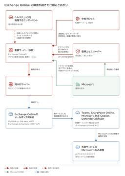
2026年11月に発生したMicrosoft 365の接続障害についてまとめてみた 235 piyolog
2026年11月13日、MicrosoftはExchange Onlineを中心に複数のMicrosoft 365サービスで接続障害が起きていると公表しました。ここでは関連する情報をまとめます。Exchange Onlineの接続障害が複数サービスへ拡大障害はExchange Onlineのメールボックスに接続できない問題として始まり、複数のMicrosoft 365サービスへ広がった。管理センタ
2日前
人間が死ぬ時に体の中では何が起きているのか？ 181 GIGAZINE
「人間の死とは何か」と聞かれた場合、「心臓が止まる」「脳への酸素供給が停止する」といった回答をする人が多いかもしれません。実際のところ、人間が死ぬ時に人体でどのような現象が引き起こされるのかについて、科学系YouTubeチャンネルのKurzgesagtが解説しています。続きを読む...
1日前
総務省が新しい無料オンライン講座「統計解析プログラミング」を1月に開講 Pythonでのデータ分析が4週間で学べる 289ITmedia AI＋ 最新記事一覧
総務省統計局が、Pythonで統計解析と主要な分析手法を学ぶ無料オンライン講座「“わかる・使える”統計解析プログラミング」を2027年1月12日に新規開講する。主成分分析、回帰分析、ランダムフォレストから需要予測の演習まで、4週間の中身と受講の条件を整理する。
2日前
総務省が新しい無料オンライン講座「統計解析プログラミング」を1月に開講 Pythonでのデータ分析が4週間で学べる | ITmedia AI＋ 最新記事一覧 289AI情報RSS
総務省統計局が、Pythonで統計解析と主要な分析手法を学ぶ無料オンライン講座「“わかる・使える”統計解析プログラミング」を2027年1月12日に新規開講する。主成分分析、回帰分析、ランダムフォレストから需要予測の演習まで、4週間の中身と受講の条件を整理する。
2日前
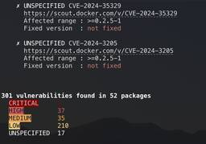
そのヤバいDockerイメージをいつまで使うのか - keroxpのScrapbox 279 Menthas #all
Dockerコンテナは、環境構築やデプロイの容易さから広く普及して久しいと思う ホストマシンを選ばず（サーバーでは大抵Linuxだろうが）、Kubernetesでスケーリングも可能 実行権限やFSの内容も、コンテナ内に閉じているからDCやVPCには影響が出ない。安全！ 安心！ と思ってると死ぬぞ Dockerだから安全は嘘 Dockerを使ってれば安全、という神話は（そんなものあるのか知らんが）ま
2日前
AIチームを率いるとは、どういうこと？ with プログラマー・起業家 amachang Part1 | The Update 99 はてなブックマーク - 人気エントリー - テクノロジー
2026年11月14日|21分 AIチームを率いるとは、どういうこと？ with プログラマー・起業家 amachang Part1 ゲスト: 天野仁史（多摩川機構エンジニアリング株式会社 代表） 一人の会社に、開発チームがいくつもある。 コードを書くAI、デザインするAI、それらを束ねるAI。スマートニュースでiOS・Android・Webの3チームを率...
12時間前
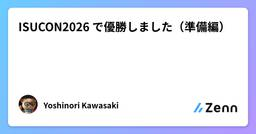
ISUCON2026 で優勝しました（準備編） 508 Zennのトレンド
Zennのトレンド
はじめにこんにちは！ @kawasy です。当日編に続いて、この記事では3か月の準備期間に何をしていたかを、時系列で追いながら振り返ります。 モチベーション私は土曜日はいつも、子どもを習い事に連れて行っています。Slack でレギュレーションの「AI 利用可」を見かけたとき、全部 AI に任せられれば、いつもどおりの土曜日を過ごしながら参加できるかもしれないと思いました。それが開発のきっかけでした
4日前
[ITmedia News] データセンターの排熱でエビ養殖、NTT系が実験 育ったら食べられる？ 担当者に聞いてみた 150ITmedia 総合記事一覧
NTTドコモビジネスなど4社が、データセンターの排熱を使ったエビ養殖の実証に乗り出す。2027年度にはバナメイエビの飼育を始める計画だ。なぜエビを選んだのか、育てたエビをどうするのか。同社の担当者に話を聞いた。
1日前
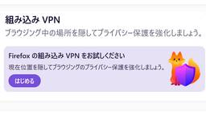
Firefoxの内蔵VPNを無料＆データ通信量無制限で全ユーザーに提供するとMozillaが発表、2027年1月31日まで 123 GIGAZINE
Firefoxブラウザには無料のVPNが内蔵されており、ウェブサイトがIPアドレスを使ってユーザーの所在地を特定したり、ウェブ上のアクセス履歴を追跡したりすることを制限することができます。通常は内蔵VPNを利用するにはサインインした上で月間50GBのデータ制限がありますが、2026年11月10日から2027年1月31日までの期間限定で、無制限に利用できるようにしたことをFirefoxブラウザを開発
1日前

AWSでゼロトラスト構成を作る手順を5つのパートに分けて整理してみた - Qiita 76 Menthas #all
Menthas #all
はじめに ゼロトラストは「社内ネットワークの中にいるから信頼する」という前提を置かず、アクセスのたびに身元と権限を確認する考え方です。 この記事では、AWSでどのサービスのどのリソースを作れば形になるのかに絞って整理します。構成を5つのパートに分け、それぞれで作るリソース...
8時間前
AWSでゼロトラスト構成を作る手順を5つのパートに分けて整理してみた - Qiita 76 はてなブックマーク - 人気エントリー - テクノロジー
はじめに ゼロトラストは「社内ネットワークの中にいるから信頼する」という前提を置かず、アクセスのたびに身元と権限を確認する考え方です。 この記事では、AWSでどのサービスのどのリソースを作れば形になるのかに絞って整理します。構成を5つのパートに分け、それぞれで作るリソースとAWS CLIのコマンドを順に並べま...
21時間前
【pstack】AIに敵対的レビューをさせるな。トークンは検証に使え 111 Zennのトレンド
AIが書いたコードをマルチエージェントで多角的な視点で別のAIに容赦なく叩かせ、それを何往復もループで繰り返せば品質は上がっていくはず。。。純粋無垢な私はずっと、そう信じていた頃がありました。ところが、かなりトークンを注ぎ込んだPRからあっさり本番バグが出てしまい、以下の疑問にはじめて気づきました。問い: AI同士の敵対的レビューで、成果物は本当に信頼できるものになるのか?結論: なりません。その
2日前
相次ぐ情報漏えいでアナログ回帰？ ダイソー「パスワード管理ノート」が品薄に 一方でリスクも──IPAに聞いた 67はてなブックマーク - 人気エントリー - テクノロジー
不正アクセスによる情報漏えいが相次ぐなか、パスワードを紙に書いて管理するアナログな方法を見直す動きがある。100円ショップ「ダイソー」では、紙の「パスワード管理ノート」が品薄になっている。運営する大創産業（広島県東広島市、以下ダイソー）はITmedia NEWSの取材に対し、ネットワークにつながっていない紙で管...
21時間前
[ITmedia News] 相次ぐ情報漏えいでアナログ回帰？ ダイソー「パスワード管理ノート」が品薄に 一方でリスクも──IPAに聞いた 67ITmedia 総合記事一覧
大創産業（ダイソー）は11月11日、紙の「パスワード管理ノート」の売れ行きが10月末ごろから伸び、一時的に品薄になっているとITmedia NEWSの取材に答えた。IPAは紙での管理を否定しない一方、紙では防ぎにくいリスクへの対策として、多要素認証やパスキーの設定を勧めている。
1日前
相次ぐ情報漏えいでアナログ回帰？ ダイソー「パスワード管理ノート」が品薄に 一方でリスクも──IPAに聞いた 67ITmedia NEWS セキュリティ 最新記事一覧
大創産業（ダイソー）は11月11日、紙の「パスワード管理ノート」の売れ行きが10月末ごろから伸び、一時的に品薄になっているとITmedia NEWSの取材に答えた。IPAは紙での管理を否定しない一方、紙では防ぎにくいリスクへの対策として、多要素認証やパスキーの設定を勧めている。
1日前
幻覚がひどいAIでも言葉遣いが洗練されていれば人を簡単に騙せることが判明 66
はてなブックマーク - 人気エントリー - テクノロジー
ChatGPTなどに代表される大規模言語モデルは、その根本的な仕組みとして、モデル自身は自分の回答が合っているか間違っているかを判断できません。そのためこの手のAIには事実ではないことをまるで事実かのように話してしまう「幻覚(ハルシネーション)」の問題が常につきまといます。新たな研究では、AIの回答に幻覚があ...
21時間前
幻覚がひどいAIでも言葉遣いが洗練されていれば人を簡単に騙せることが判明 66 GIGAZINE
ChatGPTなどに代表される大規模言語モデルは、その根本的な仕組みとして、モデル自身は自分の回答が合っているか間違っているかを判断できません。そのためこの手のAIには事実ではないことをまるで事実かのように話してしまう「幻覚(ハルシネーション)」の問題が常につきまといます。新たな研究では、AIの回答に幻覚があったとしても、流暢(りゅうちょう)な言葉遣いであれば人間はそれを信用してしまう可能性が高い
21時間前

Software Factoryの先へ：全社の仕事をAI-NativeにするUbieの内製クラウドエージェント基盤 168 Zennのトレンド
Ubie CTO の @yukukotani です。Ubie では 2023 年、GPT-3.5 Turbo が出た頃から、Web UI や Slack を起点に動くクラウドエージェント基盤を内製してきました（当時の様子）。2025 年には、Software Factory を目指して、クラウド型エンジニアリングエージェント Uvin の開発も始めました（当時の様子）。一貫してクラウドエージェント
3日前
Software Factoryの先へ：全社の仕事をAI-NativeにするUbieの内製クラウドエージェント基盤 | Ubie テックブログのフィード 168 企業テックブログRSS
Ubie CTO の @yukukotani です。Ubie では 2023 年、GPT-3.5 Turbo が出た頃から、Web UI や Slack を起点に動くクラウドエージェント基盤を内製してきました（当時の様子）。2025 年には、Software Factory を目指して、クラウド型エンジニアリングエージェント Uvin の開発も始めました（当時の様子）。一貫してクラウドエージェント
3日前
Software Factoryの先へ：全社の仕事をAI-NativeにするUbieの内製クラウドエージェント基盤 | Ubie テックブログのフィード 168 AI情報RSS
Ubie CTO の @yukukotani です。Ubie では 2023 年、GPT-3.5 Turbo が出た頃から、Web UI や Slack を起点に動くクラウドエージェント基盤を内製してきました（当時の様子）。2025 年には、Software Factory を目指して、クラウド型エンジニアリングエージェント Uvin の開発も始めました（当時の様子）。一貫してクラウドエージェント
3日前
Software Factoryの先へ：全社の仕事をAI-NativeにするUbieの内製クラウドエージェント基盤 168 Ubie テックブログのフィード
Ubie CTO の @yukukotani です。Ubie では 2023 年、GPT-3.5 Turbo が出た頃から、Web UI や Slack を起点に動くクラウドエージェント基盤を内製してきました（当時の様子）。2025 年には、Software Factory を目指して、クラウド型エンジニアリングエージェント Uvin の開発も始めました（当時の様子）。一貫してクラウドエージェント
3日前

AWSをローカルマシン上でエミュレートする、AWS公式の「AWSエミュレータ」正式リリース 152 Publickey
Amazon Web Servicesは、ローカルマシン上でAWSのAPIをエミュレートする「AWSエミュレータ」の正式リリースを発表しました。 ダウンロードしてインストールすれば誰でも無料で利用でき、AWSアカウントも不要です。 Toda...
2日前
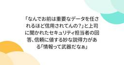
「なんでお前は重要なデータを任されるほど信用されてんの？」と上司に聞かれたセキュリティ担当者の回答、信頼に値する妙な説得力がある「情報って武器だなぁ」 53 はてなブックマーク - 人気エントリー - テクノロジー
沖田 丈11 @vjoe 俺、会社のかなり重要なデータを扱ってんのね そんで、他社から入社してきた上司から 「なんで沖田は重要なデータ任されてる程に信用されてんの？」 って聞かれて 「セキュリティ兼内部監査として、取締役の誰が休日に会社PCで熟女AV観てたか把握しているけどバラしてないから」 で納得してもらえた 202...
16時間前
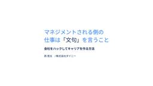
マネジメントされる側の仕事は「文句」を言うこと 80 はてなブックマーク - 人気エントリー - テクノロジー
このスライドはSlidevで作られており、以下のレポジトリで公開しています https://github.com/riya-amemiya/amemiya_riya_slide_data/tree/main/complaining_is_your_job Webバージョンはこちらから http…
1日前
AWSでゼロトラスト構成を作る手順を5つのパートに分けて整理してみた 76 Qiita - 人気の記事
はじめにゼロトラストは「社内ネットワークの中にいるから信頼する」という前提を置かず、アクセスのたびに身元と権限を確認する考え方です。この記事では、AWSでどのサービスのどのリソースを作れば形になるのかに絞って整理します。構成を5つのパートに分け、それぞれで作るリソース...
1日前
AWSでゼロトラスト構成を作る手順を5つのパートに分けて整理してみた 76 AWSタグが付けられた新着記事 - Qiita
はじめにゼロトラストは「社内ネットワークの中にいるから信頼する」という前提を置かず、アクセスのたびに身元と権限を確認する考え方です。この記事では、AWSでどのサービスのどのリソースを作れば形になるのかに絞って整理します。構成を5つのパートに分け、それぞれで作るリソースとAWS CLIのコマンドを順に並べます。パート1: AWS外のサーバーの身元を証明書で確認するパート2: サービス間の呼び出しを1
1日前
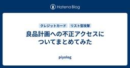
良品計画への不正アクセスについてまとめてみた 73 piyolog
2026年10月30日、良品計画は公式アプリ「MUJI アプリ」の会員情報が外部に流出した可能性があると公表し、その後の公表で対象を広げました。ここでは関連する情報をまとめます。公表のたびに広がった対象最初の公表の対象はMUJI アプリの会員情報に限られていた。その後、ネットストアの会員、氏名や住所、MUJI Card のカード番号、代金引換の受取先へと対象が広がり、11月9日の第四報で①から④の
2日前
ゲーム開発者の40％が生成AIを使用しているもののそれ以上に多くの人が生成AIは有害だと考えている 45 はてなブックマーク - 人気エントリー - テクノロジー
ゲーム開発にAIを活用することに対しては賛否両論ありますが、世界最大級のゲーム開発者会議であるGDCの最新レポートから、業界で活躍する開発者の40％が生成AIを利用していることが明らかになりました。 A new report reckons 40% of developers in the video games industry are using generative AI - but eve
16時間前
ゲーム開発者の40％が生成AIを使用しているもののそれ以上に多くの人が生成AIは有害だと考えている 45 GIGAZINE
ゲーム開発にAIを活用することに対しては賛否両論ありますが、世界最大級のゲーム開発者会議であるGDCの最新レポートから、業界で活躍する開発者の40％が生成AIを利用していることが明らかになりました。続きを読む...
16時間前
#26 Home Repo パターン 70 Menthas #all
Home Repoパターンはコーディングエージェントで開発するときのワークスペース構成のパターンで、/grill-me などで知られる Matt Pocock が提唱し、自身のサイト AI Hero で解説しました。The Home Repo PatternOne repo for your skills, AGENTS.md and shared docs, with pointers to y
1日前
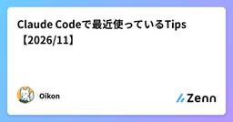
Claude Codeで最近使っているTips【2026/11】 542 Zennのトレンド
Oikonです。気がつけば2026年も終わりが見えてきました。今年はありがたいことにClaude Codeの書籍を2冊出版させていただきました。Claude Code実践入門 [生成AI深掘りガイド]（SBクリエイティブ）Claude Code実践レシピ集（技術評論社）新刊のClaude Code実践レシピ集は、個人的に好きなClaude CodeのTipsをベースに、割と好き勝手に書かせていただ
5日前
無料・インストール不要で日本語を含む13言語のリアルタイム文字起こしがブラウザからできる「Voxtral Mini 4B Realtime WebGPU」、WebGPUを駆使して完全ローカル動作可能 42 Menthas #all
会議や取材で録音した音声を文字に起こす際には、録音ファイルをアップロードしたり専用の文字起こしソフトを使ったりする方法がありますが、ブラウザだけでリアルタイムに行える無料のツールが「Voxtral Mini 4B Realtime WebGPU」です。日本語を含む13言語に対応し、WebGPUによって音声認識AIを完全ローカルで実行できるとのことなので実際に使ってみました。
17時間前

AIについての追記 41はてなブックマーク - 人気エントリー - テクノロジー
Associate Professor, Graduate School of Mathematical Sciences 私のところで大学院入学を希望する方へ―AIについての追記 この文章は2026年11月に書いています．この年は，AIが数学にもたらした影響がある閾値を超えた年として記憶されるでしょう．大学院教育にも当然多大な影響があります．学生さんから，AIについて...
10時間前
Google、AIエージェント向けUIプロトコル「A2UI」バージョン1.0を公開 | gihyo.jp 59 はてなブックマーク - 人気エントリー - テクノロジー
Google、AIエージェント向けUIプロトコル「A2UI」バージョン1.0を公開 GoogleのA2UIチームは2026年11月11日、AIエージェントがフォームやグラフなどの対話型UIを返すためのオープンプロトコル「A2UI」の初の安定版となるバージョン1.0を公開した。利用者の依頼に応じてエージェントがUIの構成や表示内容を記述し、アプ...
2日前
動いた農林中金、AI株を「底値買い」 長期で安定成長を期待 - 日本経済新聞 37 はてなブックマーク - 人気エントリー - テクノロジー
約45兆円を運用する農林中央金庫が、半導体株の上場投資信託（ETF）の投資に踏み切った。市場全体への幅広い投資に徹してきた同金庫にとって異例の判断だ。海外の年金基金も人工知能（AI）関連株に押し目買いを入れているという。AI銘柄はさえない値動きだが、成長ストーリーは健在だとみる長期資金は動き始めている。13...
21時間前
ゲームのコードのわずか0.1％未満にAIを使用したことを公表しただけで400件以上の低評価レビューが殺到 55 GIGAZINE
人気インディーゲーム「Big Walk」の開発元がゲームのプログラムのごく一部に生成AIを使用したことを公表したところ、400件以上の低評価レビューが殺到する事態となりました。生成AIが関わったコードは全体の0.1％未満で、主に技術的な問題の調査や不具合の修正に利用されたとのこと。生成AIの使用を巡ってゲーム開発者やゲーム賞の審査員の間でも議論が広がっています。続きを読む...
1日前

AIエージェントが決定を勝手に変えてしまった5つのパターンと工夫 91 Zennのトレンド
こんにちは。Dress Code の HR Force チームで給与ドメインを担当している、いっしーです。僕はほぼ一日中、Claude Code や Codex に何かしら任せています。仕事では、決定とその理由を ADR に、実装する動作を OpenSpec の仕様書に残し、エージェントにはそれらを読ませてから作業させています。ところが、決めたはずのことが、いつのまにか変わっていることがあります。
3日前
AIエージェントが決定を勝手に変えてしまった5つのパターンと工夫 | DRESS CODE TECH BLOGのフィード 91 企業テックブログRSS
こんにちは。Dress Code の HR Force チームで給与ドメインを担当している、いっしーです。僕はほぼ一日中、Claude Code や Codex に何かしら任せています。仕事では、決定とその理由を ADR に、実装する動作を OpenSpec の仕様書に残し、エージェントにはそれらを読ませてから作業させています。ところが、決めたはずのことが、いつのまにか変わっていることがあります。
3日前

AIでテストを量産したら、レビューが重くなった——レガシーコードの安全網づくり | RAKUS Developers Blog | ラクス エンジニアブログ 88 企業テックブログRSS
企業テックブログRSS
はじめに 伝票画面の表示処理が抱える問題 人間とAIによる大量テストの作成 並行して作ったら、レビューが重くなった 分担して進めたら、設計に差が生まれた 統一のために整えた2つのこと 1. 設計・実装の方針を揃える 2. 基準をレビュースキルにして、セルフチェックを統一する まとめ：AIに書かせるなら、方針と基準を先に決める
3日前

Cognitoの自己サインアップが有効だと、誰でもAWSの一時認証情報を取得できる：AI攻撃ツールARTEXの事例と確認したい設定3点 | DevelopersIO 32 Menthas #all
Datadog は、攻撃エージェント ARTEX が公開された Cognito ユーザープールに自己サインアップし、ID プールの一時認証情報で AWS を探索した様子を報告しました。成立する理由と、自分のユーザープールと認証済みロールの確かめ方を整理します。
4時間前
Cognitoの自己サインアップが有効だと、誰でもAWSの一時認証情報を取得できる：AI攻撃ツールARTEXの事例と確認したい設定3点 | DevelopersIO 32 はてなブックマーク - 人気エントリー - テクノロジー
どうも！オペ部の西村祐二です！ S3 にフロントエンドを置き、Amazon Cognito のユーザープールでログインさせ、ID プールで AWS の一時認証情報を渡す。AWS で SPA を作るときによく見る構成です。この構成が攻撃用の AI エージェントにどう使われたかを、Datadog Security Labs が2026年11月9日の記事「On the hunt fo...
7時間前
Cognitoの自己サインアップが有効だと、誰でもAWSの一時認証情報を取得できる：AI攻撃ツールARTEXの事例と確認したい設定3点 32 DevelopersIO
Datadog は、攻撃エージェント ARTEX が公開された Cognito ユーザープールに自己サインアップし、ID プールの一時認証情報で AWS を探索した様子を報告しました。成立する理由と、自分のユーザープールと認証済みロールの確かめ方を整理します。
9時間前
人類は今もなお進化し続けている、人類の体に現れている「5つの進化の兆候」とは？ 48 GIGAZINE
「人類の進化」と聞くと、四足歩行のサルが徐々に直立二足歩行へと変わっていき、最終的に狩猟や石器作りの能力を身につけたというイメージを持つ人も多いはず。ところが、人類の進化は記事作成時点でも進み続けているとのことで、科学系メディアのScienceAlertが「人類の体に現れている5つの進化の兆候」をまとめました。続きを読む...
2日前
AIユーザーの平均労働時間は非AIユーザーより最大で90分長いことが判明 45 GIGAZINE
AIユーザーと非AIユーザーを比べたとき、平均労働時間はAIユーザーのほうが最大で90分長いことが明らかになりました。この数字は従業員モニタリングソフトウェアを開発・提供しているActivTrakの研究部門・ActivTrak生産性研究所が467社・9140人を対象に集めた情報を分析した結果わかったもので、自己申告制の調査よりも信頼度の高い結果だと考えられます。続きを読む...
2日前

aws-emulatorにTerraformでリソースを作成できるか試してみる | フューチャー技術ブログ 44
 Menthas #all
Menthas #all
AWSから発表された aws-emulator に向けて、Terraform でVPCやLambdaを作成できるか、GitHub Actions のCIに組み込めるかを試しました。
1日前
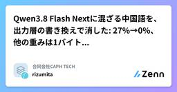
Qwen3.8 Flash Nextに混ざる中国語を、出力層の書き換えで消した: 27%→0%、他の重みは1バイトも変えずに 27 はてなブックマーク - 人気エントリー - テクノロジー
同じ問いに対する書き換えたモデルの答えでは、「誤って攻撃してしまう病気」「ビール: 最も注意」と書かれていました（サンプリングなので、文全体は元と同じではありません）。 測った条件 モデル: Qwen3.8-Flash-Next。mlx-serveの変換で作った4ビットのMLX版で、出力層だけ8ビットです。 問い: 医療の問い60問。JMML...
10時間前
アメリカ全土で航空機の運航が一時停止、原因は通信ネットワーク更新によるシステムダウンか 27 GIGAZINE
アメリカのすべての空港で、およそ4時間にわたってすべての航空機の運航が停止する事態が発生しました。原因は、交通管制システムを接続している通信ネットワークが老朽化していたために推進されていた更新の影響でシステムがダウンしたためと説明されています。続きを読む...
15時間前
無料・インストール不要で日本語を含む13言語のリアルタイム文字起こしがブラウザからできる「Voxtral Mini 4B Realtime WebGPU」、WebGPUを駆使して完全ローカル動作可能 42 GIGAZINE
会議や取材で録音した音声を文字に起こす際には、録音ファイルをアップロードしたり専用の文字起こしソフトを使ったりする方法がありますが、ブラウザだけでリアルタイムに行える無料のツールが「Voxtral Mini 4B Realtime WebGPU」です。日本語を含む13言語に対応し、WebGPUによって音声認識AIを完全ローカルで実行できるとのことなので実際に使ってみました。続きを読む...
1日前
[ITmedia PC USER] 「GeForce RTX 5090」搭載グラボに50万円超の“幅” そのワケは？ 24ITmedia 総合記事一覧
昨今話題のNVIDIAだが、コンシューマー向けの最上位GPU「GeForce RTX 5090」を搭載するグラフィックスカードの価格が秋葉原では話題になっている。
1日前
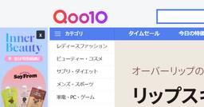
[ITmedia News] 「Qoo10」不正アクセス、個人情報漏えい 「住所の地理座標」や「身体的特徴」も対象の可能性 37ITmedia 総合記事一覧
氏名や住所の他、住所の地理座標、顧客が任意で入力した身体的特徴などが含まれる可能性があるという。
2日前
摂取量が多い人ほど認知機能が速く低下する傾向が見られた6種の甘味料とは？ 23 GIGAZINE
ゼロカロリーの炭酸飲料や砂糖不使用のガムには砂糖に代わるさまざまな甘味料が使われています。ブラジルのサンパウロ大学などの研究チームは、成人を約8年間追跡した観察研究のデータを基に甘味料の摂取量と認知機能の変化との関係を調べました。7種類の甘味料を種類ごとに分析したところ、6種類の甘味料で、摂取量が多い人ほど認知機能テストの総合成績が速く低下する傾向が見られたとのことです。続きを読む...
6時間前
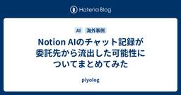
Notion AIのチャット記録が委託先から流出した可能性についてまとめてみた 123 piyolog
2026年11月9日、Notionは、委託先のFireworks AIで発生したセキュリティインシデントにより、Notion AIの一部のチャット記録が流出した可能性があると公表しました。ここでは関連する情報をまとめます。Fireworksで2経路の侵入Notionが利用していた推論基盤のFireworksでは、2026年10月に内部認証情報の不正使用が見つかり、10月24日には第三者クラウド事業
4日前
Google、AIエージェント向けUIプロトコル「A2UI」バージョン1.0を公開 59 gihyo.jp
GoogleのA2UIチームは2026年11月11日、AIエージェントがフォームやグラフなどの対話型UIを返すためのオープンプロトコル「A2UI」の初の安定版となるバージョン1.0を公開した。利用者の依頼に応じてエージェントがUIの構成や表示内容を記述し、アプリがその記述を基に画面内に描画できる。
2日前
AIで文脈を読み取って変換を自動補正 ～“書くことに集中できる”日本語入力「Mozkey」／「Mozc」をベースに「Zenz」で補正、Windows/macOSに対応するオープンソースのIME【レビュー】 34Menthas #all
「Mozkey」（もずきー）は、“書くことに集中できる”ことを目指して開発されたという日本語入力システム。「Google 日本語入力」のオープンソース版である「Mozc」をベースにしたオープンソースプロジェクトで、現在、作者の公式サイト「koyasi777.com」や「GitHub」プロジェクトのリリースページからWindows版（x64/ARM64）とMac版（Apple Silicon/Int
2日前
「すげぇ！教科書とかで見たフロッピーや！！これで容量どれくらいあるんですか？」若者のほのぼのとした感想がぶっ刺さるネット民 20 はてなブックマーク - 人気エントリー - テクノロジー
しー@園芸博NEXT！ @Sh_i0916 すげぇ！！！ フロッピーや！！ フロッピーや！！！ 教科書とかで見たフロッピーや！！ 初めて触ったかも！！ うっす！！！！ かるっ！！！！！ すげぇ！！ これで容量どれくらいあるんですか？ #フロッピー #富士通 pic.x.com/Ofx3uVhKaf 2026-11-14 09:04:15
7時間前
訂正：Google版AirTag『Pixel Tag』発売、10億台のAndroid端末で探す紛失防止トラッカー UWBと新技術『Bluetooth CS』採用
103 テクノエッジ TechnoEdge
テクノエッジ TechnoEdge
Googleが忘れ物防止・発見トラッカー Pixel Tagを国内で発売しました。11月11日から表参道のGoogle Store店頭で、翌12日からはオンラインでも購入できます。
4日前
訂正：Google版AirTag『Pixel Tag』発売、10億台のAndroid端末で探す紛失防止トラッカー UWBと新技術『Bluetooth CS』採用 | テクノエッジ TechnoEdge 103 AI情報RSS
Googleが忘れ物防止・発見トラッカー Pixel Tagを国内で発売しました。11月11日から表参道のGoogle Store店頭で、翌12日からはオンラインでも購入できます。
4日前

GitHub Actions を狙った広域サプライチェーン攻撃（11/10~11/12）に関する注意喚起 | GMO Flatt Security Blog 52 企業テックブログRSS
企業テックブログRSS
2026年11月10日から12日にかけて、GitHub 上の多数のリポジトリに対して悪性コミットにより GitHub Actions のワークフローに悪性コードが注入される事例が発生しています。 挿入されたコードは、ワークフローや npm フックが実行されると、CI環境内のシークレットを収集し、C2サーバーへのHTTP通信または Telegram Bot API への送信を試みる infostea
2日前
Announcing the GraphQL over HTTP specification | GraphQL 29Menthas #all
GraphQL is a query language for APIs and a runtime for fulfilling those queries with your existing data.
1日前
ng: Neovim のためのシンプルな GUI 28 はてなブックマーク - 人気エントリー - テクノロジー
はじめに 私は今回 Linux 向けの Neovim GUIとして「ng」を作りました。Go で書いた、最小限の GUI クライアントです。 ng は Neovim の上に新しいエディタを作るものではありません。Neovim のための、ただの UI です。GVim が Vim にとってそうであるように、ng は Neovim に GUI の窓を与えるだけです。 リポジトリ: ...
1日前
ng: Neovim のためのシンプルな GUI 28 Zennのトレンド
はじめに私は今回 Linux 向けの Neovim GUIとして「ng」を作りました。Go で書いた、最小限の GUI クライアントです。https://github.com/Shougo/ngng は Neovim の上に新しいエディタを作るものではありません。Neovim のための、ただの UI です。GVim が Vim にとってそうであるように、ng は Neovim に GUI の窓を与
1日前

「ざっくり工数どのくらい？」に「ざっくり工数このくらい」で答えてはいけない - Qiita 27 はてなブックマーク - 人気エントリー - テクノロジー
はじめに 「このアプリ作ろうと思ったら、ざっくり工数どのくらい？」 こう聞かれて、つい「ざっくり 〇人月くらいですかね」と答えてしまった経験はないでしょうか。 以前、「"工数が足らない" からの脱却」 という記事で、計画に対して工数が足らない局面の話を書きました。今回はその前段、見積もりをどう出すか、ど...
1日前
「ざっくり工数どのくらい？」に「ざっくり工数このくらい」で答えてはいけない 27 Qiita - 人気の記事
はじめに「このアプリ作ろうと思ったら、ざっくり工数どのくらい？」こう聞かれて、つい「ざっくり 〇人月くらいですかね」と答えてしまった経験はないでしょうか。以前、「"工数が足らない" からの脱却」 という記事で、計画に対して工数が足らない局面の話を書きました。今回はそ...
2日前
マイクロソフト大規模障害 74カ国・地域に混乱拡大 官公庁や企業のメール停止 技術的原因か - スポニチ Sponichi Annex 社会 17 はてなブックマーク - 人気エントリー - テクノロジー
マイクロソフト大規模障害 74カ国・地域に混乱拡大 官公庁や企業のメール停止 技術的原因か
20時間前
退屈なCoding AgentはMuseにやらせよう 215 Zennのトレンド
はじめに旧FacebookのMetaが開発したパーソナルAIエージェントのMuseがすごく良くて、意味不明なくらいずっと触ってる。紹介コード: 7L990R を入れるとトークンがもらえるのでよろしくね。https://muse.ai/Museは触ると魅力がわかるタイプのプロダクトで、使ってないとClaudeやCodexで良いじゃん、なんで今更驚き屋してんの？って思われる。そんな捻くれた俺たちでも触
5日前
[ITmedia News] 虎柄ロボットに「阪神君」と命名 首相、フィジカルAIを体験 関連企業と意見交換 26ITmedia 総合記事一覧
高市早苗首相は11月12日、機械を人工知能（AI）で自律的に動かす「フィジカルAI」の関連企業の代表らを官邸に招き、意見交換会を開いた。
2日前
aws-emulatorにTerraformでリソースを作成できるか試してみる | フューチャー技術ブログ 44 企業テックブログRSS
AWSから発表された aws-emulator に向けて、Terraform でVPCやLambdaを作成できるか、GitHub Actions のCIに組み込めるかを試しました。
2日前
aws-emulatorにTerraformでリソースを作成できるか試してみる | フューチャー技術ブログ 44 AI情報RSS
AWSから発表された aws-emulator に向けて、Terraform でVPCやLambdaを作成できるか、GitHub Actions のCIに組み込めるかを試しました。
2日前
aws-emulatorにTerraformでリソースを作成できるか試してみる 44 フューチャー技術ブログ
AWSから発表された aws-emulator に向けて、Terraform でVPCやLambdaを作成できるか、GitHub Actions のCIに組み込めるかを試しました。
2日前

Notionの「AIチャット流出懸念」影響広がる 国内企業が相次ぎ報告 「打ち合わせ内容」も漏えいか 44ITmedia AI＋ 最新記事一覧
クラウド型ワークスペース「Notion」のAI機能「Notion AI」のチャット記録が漏えいした恐れがある事案に起因し、情報流出した可能性があるとする日本企業の報告が相次いでいる。
3日前
Notionの「AIチャット流出懸念」影響広がる 国内企業が相次ぎ報告 「打ち合わせ内容」も漏えいか | ITmedia AI＋ 最新記事一覧 44AI情報RSS
クラウド型ワークスペース「Notion」のAI機能「Notion AI」のチャット記録が漏えいした恐れがある事案に起因し、情報流出した可能性があるとする日本企業の報告が相次いでいる。
3日前
古い機器をスマートホームデバイスとしてよみがえらせる「Home Assistant Connect AUX-2」が発売開始 24 GIGAZINE
「Home Assistant」は異なるメーカーのIoTデバイスを一元管理して、スマートホームを構築できるオープンソースサービスであり、非営利団体のOpen Home Foundationによって運営されています。そんなOpen Home Foundationの商業部門であるNabu Casaが、非スマートホームのデバイスをスマートホームデバイスとして生まれ変わらせる「Home Assistant
1日前

AI「Muse」専用メアド開始、「日本で取れた」報告続々 メール送受信も任せられる 41ITmedia AI＋ 最新記事一覧
ユーザーは、Museのメアドから店舗などに予約メールを送らせたり、予定関連のメールをMuseのメアドに転送してカレンダーに予定を入れさせたりできるようになる。
3日前
AI「Muse」専用メアド開始、「日本で取れた」報告続々 メール送受信も任せられる | ITmedia AI＋ 最新記事一覧 41AI情報RSS
ユーザーは、Museのメアドから店舗などに予約メールを送らせたり、予定関連のメールをMuseのメアドに転送してカレンダーに予定を入れさせたりできるようになる。
3日前

Linuxカーネル開発でAIによるバグ修正が効果。トーバルズ氏「潮目が変わり始めている兆候」 76 テクノエッジ TechnoEdge
Linuxカーネルの開発現場では、AIを活用したコード修正が成果を上げ始めているようです。Linuxの生みの親であるリーナス・トーバルズ氏は、Linux 7.4-rc2のリリースを告知する開発者向けメーリングリストへの投稿で、今回の変更の多くがAIによる修正に関係していると説明しました。
4日前
Linuxカーネル開発でAIによるバグ修正が効果。トーバルズ氏「潮目が変わり始めている兆候」 | テクノエッジ TechnoEdge 76 AI情報RSS
Linuxカーネルの開発現場では、AIを活用したコード修正が成果を上げ始めているようです。Linuxの生みの親であるリーナス・トーバルズ氏は、Linux 7.4-rc2のリリースを告知する開発者向けメーリングリストへの投稿で、今回の変更の多くがAIによる修正に関係していると説明しました。
4日前
An update on our recent security incident · Cursor 14 はてなブックマーク - 人気エントリー - テクノロジー
On October 29, we shared that we were investigating a security incident and a malicious, unauthorized copy of Anthropic's Claude Code extension that appeared in the Cursor VS Code extension marketplac
18時間前
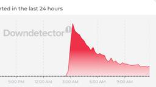
Microsoft 365で世界規模の大規模障害が発生し復旧したサーバーも再び停止する事態に、OutlookやTeamsなど幅広いサービスに影響 21 GIGAZINE
Microsoftのクラウドサービス「Microsoft 365」で2026年11月13日に世界規模の大規模障害が発生し、メールサービスの「Outlook」やチャット・会議ツールの「Microsoft Teams」、AIアシスタントの「Microsoft 365 Copilot」などが利用しにくい状態となっています。Microsoftは復旧作業を進めていますが、一度復旧したサーバーが再び応答しなく
2日前

元Anker CMOが挑む「AIのための記憶補完デバイス」、11グラムのAIウェアラブル「Memoket Gem」とは？ 21 テクノエッジ TechnoEdge
11グラムのMemoket Gemは会話を録音・要約し長期記憶エンジンで文脈を結びAIと現実世界をつなぐウェアラブル。日本市場を視野に開始は全てユーザー任せでプライバシー重視
2日前
元Anker CMOが挑む「AIのための記憶補完デバイス」、11グラムのAIウェアラブル「Memoket Gem」とは？ | テクノエッジ TechnoEdge 21 AI情報RSS
11グラムのMemoket Gemは会話を録音・要約し長期記憶エンジンで文脈を結びAIと現実世界をつなぐウェアラブル。日本市場を視野に開始は全てユーザー任せでプライバシー重視
2日前
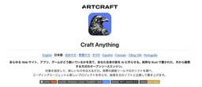
コード非公開のWebサイト・アプリ・ゲームを解析し、AIが類似版を生成する無料ツール「Craft Anything」（生成AIクローズアップ） 263 テクノエッジ TechnoEdge
今回は、既存のウェブサイトやアプリ、ゲームの仕組みを解析し、AIを使って自分だけの類似バージョンを生成してくれるオープンソースツール「Craft Anything」を取り上げます。
6日前
コード非公開のWebサイト・アプリ・ゲームを解析し、AIが類似版を生成する無料ツール「Craft Anything」（生成AIクローズアップ） | テクノエッジ TechnoEdge 263 AI情報RSS
今回は、既存のウェブサイトやアプリ、ゲームの仕組みを解析し、AIを使って自分だけの類似バージョンを生成してくれるオープンソースツール「Craft Anything」を取り上げます。
6日前
マーケ支援のプレイド、不正アクセスでサービス停止 - 日本経済新聞 13 はてなブックマーク - 人気エントリー - テクノロジー
顧客データ分析でマーケティングを支援するサービスを手がけるプレイドは13日、主力サービス「KARTE（カルテ）」に不正アクセスを受けたと発表した。情報流出の有無は調査中とした。緊急メンテナンスのため、カルテ
19時間前
宝くじ公式サイト、会員の当落情報まで第三者が閲覧の可能性 リスト型攻撃か 35ITmedia NEWS セキュリティ 最新記事一覧
宝くじを販売する全国の都道府県と指定都市は11月11日、公式サイトに不正ログインした第三者が、一部会員のくじの当落情報や氏名、住所などを閲覧した可能性があると発表した。同日までに、不正な購入や当せん金の受け取りは確認していないという。
2日前

Google、高速で低価格の「Gemini 4 Hydrogen」発表 無料ユーザーも利用可能 20ITmedia AI＋ 最新記事一覧
Googleは、AIエージェントによる作業や日常的なコーディングに向けた高速・高効率の新モデル「Gemini 4 Hydrogen」を発表した。「Gemini 3.8 Flash」の約2.5倍の速さでタスクを終え、推論の深さを4段階から選べる。APIやGeminiアプリなどで同日から順次提供している。
2日前
Google、高速で低価格の「Gemini 4 Hydrogen」発表 無料ユーザーも利用可能 | ITmedia AI＋ 最新記事一覧 20AI情報RSS
Googleは、AIエージェントによる作業や日常的なコーディングに向けた高速・高効率の新モデル「Gemini 4 Hydrogen」を発表した。「Gemini 3.8 Flash」の約2.5倍の速さでタスクを終え、推論の深さを4段階から選べる。APIやGeminiアプリなどで同日から順次提供している。
2日前
「好機が来た」――なぜ今Sakana AIは、イチからAIモデルを作るのか “新たな一手”のねらいを聞いた 19ITmedia AI＋ 最新記事一覧
既存モデルの活用に注力してきたSakana AIが、自社で一からAIモデルの開発を始めた。なぜ今なのか。背景や狙いを聞いた。
2日前
「好機が来た」――なぜ今Sakana AIは、イチからAIモデルを作るのか “新たな一手”のねらいを聞いた | ITmedia AI＋ 最新記事一覧 19AI情報RSS
既存モデルの活用に注力してきたSakana AIが、自社で一からAIモデルの開発を始めた。なぜ今なのか。背景や狙いを聞いた。
2日前

Rails: DHHがRails World 2026キーノートで「語らなかった」部分とは（翻訳） | TechRacho 32 企業テックブログRSS
企業テックブログRSS
概要 元サイトの許諾を得て翻訳・公開いたします。 英語記事: Look at all the things he's not doing - Andy Croll 原文公開日: 2026年10月02日 原著者: Andy Croll 日本語タイトルは内容に即したものにしました。 わかりやすさのため、リンクの一部を差し替えています。 Rails: DHHがRails World 2026キーノートで
2日前
Announcing Rust 1.100.0 32 Rust Blog
The Rust team is happy to announce a new version of Rust, 1.100.0. Rust is a programming language empowering everyone to build reliable and efficient software.If you have a previous version of Rust in
3日前

お客様の前に立つフロント人材になるために、技術以外の最小構成 | フューチャー技術ブログ 144 企業テックブログRSS
お客様の前に立ってプロジェクトを自律的に進めるために、技術のほかに何が必要か、会議でのやり取りとプロジェクト全体視点でのやり取りの2つの層に分けて整理しました。
4日前
お客様の前に立つフロント人材になるために、技術以外の最小構成 | フューチャー技術ブログ 144 AI情報RSS
お客様の前に立ってプロジェクトを自律的に進めるために、技術のほかに何が必要か、会議でのやり取りとプロジェクト全体視点でのやり取りの2つの層に分けて整理しました。
4日前
お客様の前に立つフロント人材になるために、技術以外の最小構成 144 フューチャー技術ブログ
お客様の前に立ってプロジェクトを自律的に進めるために、技術のほかに何が必要か、会議でのやり取りとプロジェクト全体視点でのやり取りの2つの層に分けて整理しました。
4日前
2026年度 新卒研修『AWS インフラハンズオン』の資料を公開します | CyberAgent Developers Blog | サイバーエージェント デベロッパーズブログ 136 企業テックブログRSS
企業テックブログRSS
こんにちは、株式会社WinTicket でバックエンドとインフラを担当している茨木啓瑚（@oyasu ...
4日前
2026年度 新卒研修『AWS インフラハンズオン』の資料を公開します | CyberAgent Developers Blog | サイバーエージェント デベロッパーズブログ 136 AI情報RSS
こんにちは、株式会社WinTicket でバックエンドとインフラを担当している茨木啓瑚（@oyasu ...
4日前
2026年度 新卒研修『AWS インフラハンズオン』の資料を公開します 136 CyberAgent Developers Blog | サイバーエージェント デベロッパーズブログ
こんにちは、株式会社WinTicket でバックエンドとインフラを担当している茨木啓瑚（@oyasu ...
4日前
マイクロソフトの障害が全面復旧 メールやAI、ほぼ1日半経て - 日本経済新聞 10 はてなブックマーク - 人気エントリー - テクノロジー
米マイクロソフトは14日、業務ソフト「マイクロソフト365」で起きた大規模な障害についてサービスが全面復旧したと発表した。日本時間14日午後2時半すぎに接続状況ページで復旧を報告した。メールソフト「Outlook（アウトルック）」や人工知能（AI）支援機能「Copilot（コパイロット）」などが利用できない影響が出てい...
14時間前

Google Antigravity、クラウド上でAIエージェントが働く「リモートエージェント」機能を搭載。就業時間外でもAIエージェントは働き続ける 26 Publickey
Googleが提供するAIエージェントによる開発環境「Antigravity」に、新機能「リモートエージェント」が搭載されました。 We want Antigravity to be working for you all the time...
2日前
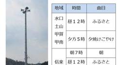
[ITmedia News] 緊急情報の音声放送システムにランサムウェア攻撃 滋賀県甲賀市、屋外拡声器など使えず 15ITmedia 総合記事一覧
屋外拡声器などを使った緊急情報も停止しており、緊急情報は市の公式LINEやテレビ、ラジオなどで伝える。
2日前
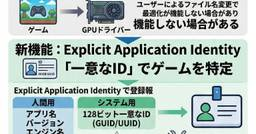
[ITmedia PC USER] PCゲームの「起動に時間がかかりすぎる問題」と「プチフリーズ」はなぜ起こる？ その原因を乗り越える取り組みも 13ITmedia 総合記事一覧
PCゲーム、とりわけWindows向けのものは、初回やグラフィックスドライバの更新後の起動に時間がかかったり、ゲーム中に動作が一瞬止まったりすることがある。その理由と、この現象を解消するための取り組みについて解説する。
2日前
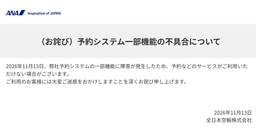
[ITmedia News] 【復旧】ANA、予約システムの一部に障害、予約できない場合も……国内線タイムセール初日に
13ITmedia 総合記事一覧
「JALも予約できない」という声も出ていた。【更新】
2日前

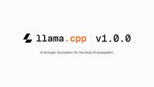
llama.cpp v1.0.0 : A stronger foundation for the local AI ecosystem 12はてなブックマーク - 人気エントリー - テクノロジー
llama.cpp makes it possible to run multi-modal LLMs across a wide range of hardware - from consumer-grade local machines to high-end enterprise servers. Through quantization, optimized backends, and a
1日前

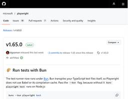
テストフレームワーク「Playwright」がBunを正式サポート。テストランナーの実行を可能に 38 Publickey
Webアプリケーションのテストフレームワーク「Playwright」が、最新バージョンのv1.65.0で、Bunでのテストランナー実行を正式にサポートしました。 PlaywrightのテストランナーはこれまでNode.jsが用いられていまし...
3日前
現代のソフトウェアは劣化しているかもしれないが昔のソフトウェアはもっとひどかったという指摘 7 はてなブックマーク - 人気エントリー - テクノロジー
ソフトウェアの肥大化や動作の遅さ、バグの増加などを理由に「昔のソフトウェアの方が品質が高かった」と主張する人もいます。しかし、1990年からコンピューターを使い続けてきたソフトウェアエンジニアのジェイク・ヴォイトコ氏は過去のソフトウェアが抱えていた問題を振り返り、現代のソフトウェアがいかに改善されて...
17時間前
現代のソフトウェアは劣化しているかもしれないが昔のソフトウェアはもっとひどかったという指摘 7 GIGAZINE
ソフトウェアの肥大化や動作の遅さ、バグの増加などを理由に「昔のソフトウェアの方が品質が高かった」と主張する人もいます。しかし、1990年からコンピューターを使い続けてきたソフトウェアエンジニアのジェイク・ヴォイトコ氏は過去のソフトウェアが抱えていた問題を振り返り、現代のソフトウェアがいかに改善されてきたのかを解説しています。続きを読む...
17時間前
Gemini、Google Walletと連携して家計を分析--サブスクの値上げも検出 7はてなブックマーク - 人気エントリー - テクノロジー
グーグルは米国時間11月13日、AIアシスタント「Gemini」で「Google Wallet」の情報を使い、支出の分析や予算づくりを支援する機能の提供を米国で開始した。ウェブ版とAndroid、iOS向けに順次展開する。現時点で日本では利用できない。 「Personal Intelligence」の連携先にGoogle Walletが加わる（画像：Google、公式ブ...
1日前

Devinはソフトウェアファクトリーのフレームワークになった | Timee Product Team Blog 140 企業テックブログRSS
企業テックブログRSS
こんにちは、タイミーで開発生産性改善チームのマネージャーをしている新谷です。 みなさん Devin を使っていますか？タイミーでは日々 Devin が仕事をしてくれています。 Devinは単にタスクを依頼するツールにとどまらず、ソフトウェアファクトリーのフレームワークになりました。最近の進化が著しいので紹介させてください。本当にすごい。 ソフトウェアファクトリーとは LayerX CTOの松本さん
6日前
古いiPadやメモリ1GBの小型端末でも160億パラメータのAIをローカルで動かせる無料ツール「smolmaxxing」が登場 11 GIGAZINE
古いタブレットや小型デバイスでもAIモデルを動かせるようにするオープンソースプロジェクト「smolmaxxing」が公開されました。メモリ容量が限られた端末でもAIモデルを実行できるようにするもので、2013年発売の初代iPad Airや小型のテレビ用端末で動作が確認されています。続きを読む...
1日前

Kotlin コンテキストパラメータの詳細な挙動を調べてみた | ドワンゴ教育サービス開発者ブログ 18 企業テックブログRSS
企業テックブログRSS
Kotlin の新機能、コンテキストパラメータの細かい仕様について、実際にコードを書いて挙動を調べてみました
3日前
【追記あり】M365障害、ChatGPT／Claudeのコネクタにも影響 「ほとんどのリクエストで動作しない」
6ITmedia AI＋ 最新記事一覧
「Microsoft 365」の複数サービスで障害が発生しており、OpenAIの「ChatGPT」とAnthropicの「Claude」のMicrosoft 365コネクタも正常に動作していないと両社が報告している。
9時間前
【追記あり】M365障害、ChatGPT／Claudeのコネクタにも影響 「ほとんどのリクエストで動作しない」 | ITmedia AI＋ 最新記事一覧 6AI情報RSS
「Microsoft 365」の複数サービスで障害が発生しており、OpenAIの「ChatGPT」とAnthropicの「Claude」のMicrosoft 365コネクタも正常に動作していないと両社が報告している。
9時間前
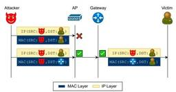
“同じWi-Fiにいる誰か”に通信をのぞかれる？ 「クライアント分離」を2秒で突破する攻撃 米大学が検証 32ITmedia NEWS セキュリティ 最新記事一覧
米カリフォルニア大学リバーサイド校などに所属する研究者らが2月に発表した論文「AirSnitch: Demystifying and Breaking Client Isolation in Wi-Fi Networks」は、Wi-Fiの同じネットワーク内にいる端末同士の通信を遮断する「クライアント分離」を突破する攻撃手法を発表した研究報告だ。
4日前
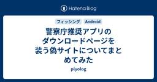
警察庁推奨アプリのダウンロードページを装う偽サイトについてまとめてみた 16
piyolog
2026年11月11日、警察庁は警察庁推奨アプリのダウンロードページを装った偽サイトについて注意を呼びかけました。ここでは関連する情報をまとめます。警察庁推奨アプリを装う偽サイトとは何か警察庁をかたるSMSで偽の警察庁ウェブサイトに誘導し、警察庁推奨アプリを装って不審なファイルをダウンロードさせる手口。警察庁は11月11日、公式Xで注意喚起(出典: 1)。同日にトビラシステムズが同じ手口を公表し、
3日前

wfx-loot campaign pushes CI secret stealer to tens of thousands of repositories 16 Aikido Security's Blog
A wave of compromised accounts are pushing a CI secret stealer. See if you’re affected, what it steals, and what to rotate.Category: Vulnerabilities & Threats
3日前

知人の「録画映像」が会議に現れる 北朝鮮の暗号資産窃取「FaceStealer」、FBIが盗撮動画900本超を押収 9 テクノエッジ TechnoEdge
北朝鮮のFaceStealer偽会議リンクで感染、900本超の盗撮で4億ドル超窃取。対策は公式アプリ・招待コード・カメラオフ・更新回避・日程確認・MFA・報告など
2日前
知人の「録画映像」が会議に現れる 北朝鮮の暗号資産窃取「FaceStealer」、FBIが盗撮動画900本超を押収 | テクノエッジ TechnoEdge 9 AI情報RSS
北朝鮮のFaceStealer偽会議リンクで感染、900本超の盗撮で4億ドル超窃取。対策は公式アプリ・招待コード・カメラオフ・更新回避・日程確認・MFA・報告など
2日前
GoogleのGemini搭載スマートグラス「Intelligent Eyewear」が予約受付開始、70以上の言語のリアルタイム翻訳やハンズフリーでのAI操作が可能 9 はてなブックマーク - 人気エントリー - テクノロジー
Googleは2026年11月12日、SamsungおよびメガネブランドのWarby Parker、Gentle Monsterと共同開発したスマートグラス「Intelligent Eyewear」の予約受付を開始しました。AIアシスタントのGeminiを搭載し、スマートフォンを取り出すことなく目の前にある物について質問したり、外国語の会話をリアルタイムで翻訳したりす...
2日前

Google DeepMind、「AlphaGenome 2」発表 細胞の種類ごとにDNA変異の影響を予測するAI 15ITmedia AI＋ 最新記事一覧
Google DeepMindは、DNA配列が特定の細胞種に与える影響を予測する次世代AIモデル「AlphaGenome 2」を発表した。1億超の細胞データで学習し、細胞の種類や状態を条件指定して予測できる。疾患に関わる遺伝子変異の特定精度を前モデルから大幅に向上させており、非営利目的ならAPI経由で利用できる。
3日前
Google DeepMind、「AlphaGenome 2」発表 細胞の種類ごとにDNA変異の影響を予測するAI | ITmedia AI＋ 最新記事一覧 15AI情報RSS
Google DeepMindは、DNA配列が特定の細胞種に与える影響を予測する次世代AIモデル「AlphaGenome 2」を発表した。1億超の細胞データで学習し、細胞の種類や状態を条件指定して予測できる。疾患に関わる遺伝子変異の特定精度を前モデルから大幅に向上させており、非営利目的ならAPI経由で利用できる。
3日前
「上限がある仕事」はオープンモデルへ──トークン爆発の時代に、今井翔太氏とNVIDIA井﨑武士氏が引くAIモデル選定の線 28ProductZine:新着一覧
AIエージェントの普及で推論に使うトークンは桁違いに増え、最先端のフロンティアモデルだけを使い続ければコストは回収できない。一方で、オープンモデルには出自や安全性のリスクもある中で、どの問題をどのモデルで解けばよいのか。NVIDIAが開発者を招いて開催した「NVIDIA Agentic AI Day Japan 2026」では、AI研究者の今井翔太氏とエヌビディアの井﨑武士氏が、モデルの使い分け、
4日前
当社サービスへの不正アクセスに関するご報告 8 はてなブックマーク - 人気エントリー - テクノロジー
現在、当社の提供する「KARTE」に対する第三者からの不正アクセスを検知したため、緊急メンテナンスとしてKARTE全体のサービスを停止しています。 現在、障害解消に向けて調査対応を進めております。新たに公表すべき事実が判明した際には速やかにお知らせいたします。 ■ 対象プロジェクト KARTEをご利用の全てのプロジ...
1日前

MCP を組み込んだアプリを手元で複数動かすための構成パターン | Nature Engineering Blog 63 企業テックブログRSS
企業テックブログRSS
モバイルエンジニアの亀田です。 Emacs が 50 周年ですね。 MCP が発表されてから自分で使うツールには MCP を組み込んできました。当然 Emacs にも組み込んでいますし、弊社の Nature Home アプリでも、開発中は MCP でいろいろな操作ができるようにしています。 次の GIF は、Claude Code から、iPhone で動かしている開発中の Nature Home
5日前
サイバー攻撃受けた医療現場のリアル 患者の死亡率が3割上昇 乳がん患者の半裸画像流出、セラピー記録で脅迫され自殺も 61ITmedia NEWS セキュリティ 最新記事一覧
米カリフォルニア大学サンディエゴ校などに所属する研究者らが医学誌「Journal of Medical Internet Research」で発表した論文「Unveiling Patient-Level Harms and At-Risk Clinical Groups During Hospital Cyberattacks: Systematic Review of Global Case S
5日前

AWS、AIエージェント向けに強力な隔離環境とネイティブなEC2性能を備えた軽量VM「AWS Nitro Sandboxes」提供開始 25 Publickey
Amazon Web Services（AWS）は、Amazon EC2インスタンス上でほぼネイティブのEC2性能で動作しつつ、Nitroシステムハードウェアレベルのきわめて強力な隔離環境を備えた軽量な仮想マシン「AWS Nitro San...
3日前
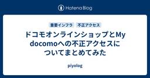
ドコモオンラインショップとMy docomoへの不正アクセスについてまとめてみた 92 piyolog
2026年11月5日、ドコモは、ドコモオンラインショップとMy docomoへの不正アクセスで顧客情報が流出したことを確認したと公表しました。ここでは関連する情報をまとめます。経路遮断と一時再開の後に再停止ドコモオンラインショップとMy docomoでは、2026年11月4日10時30分頃にアラートを検知して対応を始め、攻撃経路を遮断してMy docomoを一時再開した。同日23時台に不正アクセス
6日前
イーサリアム財団のライセンスを順守しなかった時は剣で自らの命を絶つ「切腹ライセンス」を拒否したことで解雇された従業員が訴訟を提起 7 GIGAZINE
ブロックチェーンの「イーサリアム」を関する開発プログラムの作成や国際会議を主催するイーサリアム財団の元従業員が、「イーサリアムのライセンスを順守しなかった場合、剣で自らの命を絶つ」という財団の内部方針に反対したことで不当に解雇されたとして、財団および共同創設者に対し2026年11月4日に訴訟を提起しました。続きを読む...
1日前
Introducing Claude Fable 5.2 and Claude Mythos 5.2 87 Anthropic Newsroom
Our most capable models for daunting technical work, Claude Fable 5.2 and Claude Mythos 5.2 set a new bar in coding, finance, and the sciences.
6日前
Claude Fable 5.2 and Mythos 5.2 87 Claude Product announcements
Introducing Claude Fable 5.2 and Claude Mythos 5.2, our new models for the hardest technical challenges.
6日前
Claude Fable 5.2 and Mythos 5.2 87
Claude Code Blog
Introducing Claude Fable 5.2 and Claude Mythos 5.2, our new models for the hardest technical challenges.
6日前
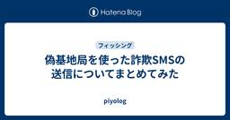
偽基地局を使った詐欺SMSの送信についてまとめてみた 85 piyolog
2026年11月9日、警視庁は、東京都中央区の銀座で偽基地局を運用したとして中国籍の男を電波法違反の疑いで現行犯逮捕したと発表しました。ここでは関連する情報をまとめます。銀座の路上で偽基地局を運用した疑い警視庁は中国籍で東京都北区に住む無職の男(31)が2026年11月7日午後3時半ごろ、東京都中央区銀座の路上で免許を受けずに車へ無線機を設置して電波を発信し、無線局を運用した疑いで現行犯逮捕し9日
5日前

Test your applications against AWS locally with AWS Emulator 22 AWS News Blog
AWS News Blog
AWS Emulator is a free, open-source local emulator in Rust that lets developers test applications against nearly every AWS service on their own machine using the same CLI and SDK commands, with fideli
3日前

既存サービスの ECS タスクを read-only root filesystem & non-root 構成に作り変える | MNTSQ Techブログ 52 企業テックブログRSS
企業テックブログRSS
はじめに なぜやるのか read-only 化と non-root 化の嬉しさ 進め方 read-only 化 /tmp 配下は例外的に書き込めるようにする ECS Exec のエージェントにも書き込み先を与える 空のボリュームはイメージの中身を隠す uv run で起動するサービスには UV_NO_SYNC=1 を渡す 依存の更新で書き込みが増える 検証は rollout とログの件数だけでは足
5日前
中国AI企業は禁輸措置中でもNVIDIAのBlackwell世代AIチップを使って高性能AIを作っていた 6 はてなブックマーク - 人気エントリー - テクノロジー
アメリカは高性能AIチップの中国への輸出を制限しており、中国も輸入を制限しています。しかし、AI研究組織のUnemployment Labsが複数の中国製AIモデルを分析した結果、制限対象GPUを用いて開発された痕跡が発見されました。 Top Chinese Frontier AI Models Carry the Fingerprint of Export-Controlled NVIDIA B
1日前
中国AI企業は禁輸措置中でもNVIDIAのBlackwell世代AIチップを使って高性能AIを作っていた 6 GIGAZINE
アメリカは高性能AIチップの中国への輸出を制限しており、中国も輸入を制限しています。しかし、AI研究組織のUnemployment Labsが複数の中国製AIモデルを分析した結果、制限対象GPUを用いて開発された痕跡が発見されました。続きを読む...
1日前
Introducing Claude Whiteboards, Claude Sheets, and Claude Data 44 Claude Product announcements
Now you can brainstorm on whiteboards, build sheets, and share data directly in Claude.
5日前
Gemini Decisions API: Fast, calibrated multimodal decisions 17 AI
Meet the Gemini Decisions API, powered by our state-of-the-art model Gemini Decision for fast, calibrated multimodal decisions.
3日前
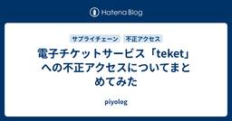
電子チケットサービス「teket」への不正アクセスについてまとめてみた 17 piyolog
2026年11月8日、電子チケットサービス「teket」を提供するteketは第三者からの不正アクセスにより顧客情報の一部が外部に流出したことを確認したと公表しました。ここでは関連する情報をまとめます。「teket」の全サービス停止teketは2026年11月5日、「teket」のサーバーに外部から不正なアクセスが行われた可能性が高いと判断し、同日20時30分にサービスを停止するとともに、不正アク
4日前
LED照明に虫が集まりにくいのはなぜか？ 5 GIGAZINE
夜の街灯や玄関灯にガなどの虫が集まっている光景は、誰しも一度は目にしたことがあるはず。ブロガーのケイト・セント・ジョン氏が、屋外の照明をLEDに替えた家庭の体験談や、ブリストル大学の研究チームが家庭用の照明4種類を比べた野外実験をもとに、LEDに虫が集まりにくい理由を自身のブログでまとめています。続きを読む...
2日前
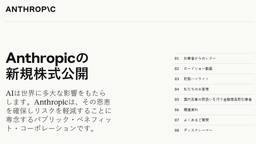
Anthropicの株式は11月19日に取引開始、日本でもIPO抽選に参加可能 5
GIGAZINE
Anthropicが新規株式公開(IPO)に関する日本語ページを公開しました。IPOの詳しいスケジュールやティッカーコードなども記されています。続きを読む...
2日前

ドメインとブランドを持たない。複数プロダクト向けデザインシステムの設計判断 | RAKUS Developers Blog | ラクス エンジニアブログ 39 企業テックブログRSS
はじめに プロダクト開発支援課フロントエンド推進チームの安彦です。 プロダクト開発支援課は2026年10月に発足したばかりの組織です。私たちのチームが顧客としているのは、プロダクトの先にいるエンドユーザーだけではありません。社内でプロダクトを作っている開発者もまた、私たちが価値を届けるべき顧客として捉えています。 現在、社内の複数のプロダクトで共通して使えるデザインシステム「Libero（リベロ）
5日前
常時稼働エージェントの作り方（Claude公式ブログを資料化） 3 Technology - Speaker Deck
Technology - Speaker Deck
以下のURLを私のClaude Codeに渡して、スライドをポン出しする実験です。https://claude.com/ja/resources/articles/building-always-on-agents
5時間前
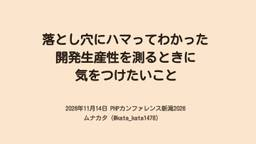
落とし穴にハマってわかった 開発生産性を測るときに気をつけたいこと 3 Technology - Speaker Deck
PHPカンファレンス新潟2026 登壇資料https://fortee.jp/phpconniigata-2026/proposal/b782993d-5095-4610-921d-1cdeaa7c4314
12時間前
llama.cpp 1.0.0リリース ——API・ABIの非互換変更をメジャーバージョンの更新で明示へ 3 gihyo.jp
llama.cppの開発チームは2026年11月13日、初のメジャー版となる1.0.0をリリースした。llama.cppは、大規模言語モデル（LLM）の推論を実行するC/C++製ライブラリで、計算を支えるテンソルライブラリggmlも同時に1.0.0となった。
17時間前
AIを使って科学論文を偽造してみたらこうなった 3 GIGAZINE
学術出版業界ではAIによって大量生産された低品質なコンテンツ、いわゆる「AIスロップ」が問題視されつつあります。科学技術系フリーライターのベンジャミン・スクーゼ氏はAIツールを用いて偽造論文を生成する実証実験を通じ、学術出版システムの未来に関する考察を行いました。続きを読む...
20時間前
“何でもリバースエンジニアリング”生成AIで広がる ソフトウェアもスマート家電も手軽に改造……ブームに潜む危険 38ITmedia NEWS セキュリティ 最新記事一覧
AIを使ってスマート家電のOSに手を加え、AIに生成させたコードに入れ替えて、広告を消したり自分好みの機能を付け加えたりする行為がちょっとしたブームになっている。ソフトウェアの改造が手軽にできるとうたった“何でもリバースエンジニアリング”（REA）というツールもGitHubで注目を集めているが、セキュリティ上のリスクも懸念されている。
5日前
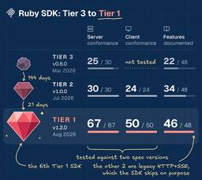
MCP仕様を完全にサポートしたMCP公式のRuby SDKが登場。「MCP SDK Tier 1」に到達と 55 Publickey
Linux Foundation傘下でMCP（Model Context Protocol）の仕様策定を行っている「Agentic AI Foundation（AAIF）」は、MCP公式のRuby SDKがMCP仕様を完全にサポートした「M...
6日前
太陽を281.1年かけて公転する準惑星候補の天体「2026 ED138」が見つかる 4 GIGAZINE
2026年10月、アメリカの天文学者が既存の観測データを分析することで、太陽を281.1年かけて公転する準惑星候補の天体「2026 ED138」を発見しました。記事作成時点で存在する準惑星は5つのみで、2026 ED138が準惑星と認められれば6つ目となります。続きを読む...
1日前
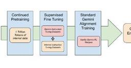
[ITmedia News] Googleの社内専用コーディングAI「GfG」、その全容 Geminiに社内データ1兆トークン学習させ開発 所要時間半減の業務も 4ITmedia 総合記事一覧
米Googleなどに所属する研究者らが10月に発表した論文「Customizing an LLM for Enterprise Software Engineering」は、AIに企業独自の膨大な開発データを学習させ、社内システム開発に特化したコーディングモデルを構築する手法とその実用効果をまとめた研究報告だ。
2日前
Googleの社内専用コーディングAI「GfG」、その全容 Geminiに社内データ1兆トークン学習させ開発 所要時間半減の業務も 4ITmedia AI＋ 最新記事一覧
米Googleなどに所属する研究者らが10月に発表した論文「Customizing an LLM for Enterprise Software Engineering」は、AIに企業独自の膨大な開発データを学習させ、社内システム開発に特化したコーディングモデルを構築する手法とその実用効果をまとめた研究報告だ。
2日前
Googleの社内専用コーディングAI「GfG」、その全容 Geminiに社内データ1兆トークン学習させ開発 所要時間半減の業務も | ITmedia AI＋ 最新記事一覧 4AI情報RSS
米Googleなどに所属する研究者らが10月に発表した論文「Customizing an LLM for Enterprise Software Engineering」は、AIに企業独自の膨大な開発データを学習させ、社内システム開発に特化したコーディングモデルを構築する手法とその実用効果をまとめた研究報告だ。
2日前

最大32万人の個人情報流出 SMBC系で漏れた「年収」「保証額」の重過ぎる意味 6＠IT Security&Trustフォーラム 最新記事一覧
SMBCコンシューマーファイナンスの保証業務用システムが不正アクセスを受け、最大32万118人分の個人情報が外部に送信された。氏名や住所、運転免許証番号だけではなく、年収やローンの保証額まで含まれていた。金融機関との取引情報を知る攻撃者は、次に何を仕掛けてくるのか。
3日前

ターミナル用ライブラリ［Libghostty 1.0」リリース。Windows版マルチプレクサ「Rex」もまもなく登場予定 42 Publickey
ターミナルエミュレータ「Ghostty」のコア部分を汎用ライブラリ化した「Libghostty 1.0」正式版がリリースされました。 「Libghostty」は、HashiCorpの共同創業者であり、同社を退社後は個人開発者としてターミナル...
6日前
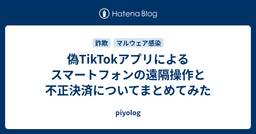
偽TikTokアプリによるスマートフォンの遠隔操作と不正決済についてまとめてみた 11 piyolog
2026年11月10日、福岡、兵庫、北海道の3道県警の合同捜査本部はTikTokを装う偽アプリでスマートフォンを遠隔操作し電子決済サービスを不正に使ったとして、中国籍の男2人を詐欺などの疑いで逮捕したと発表しました。ここでは関連する情報をまとめます。全国に広がる偽アプリ被害偽アプリをインストールさせてスマートフォンを遠隔操作し、電子決済サービスを不正に使う被害は2026年8月から全国で相次いだ(出
4日前
無印良品、ネットストア再開延期 リスト型攻撃を確認、新たに約27万件漏えいか 40ITmedia NEWS セキュリティ 最新記事一覧
良品計画は11月9日、MUJIアプリなどへの不正アクセスに関する第4報を発表した。停止中の無印良品ネットストアは再開を延期し、再開時には全利用者にパスワードの再設定を求める方向だ。
5日前
Rust 1.100.0リリース ——never型とVec・Box向けの独自アロケーターAPIを安定化 3 gihyo.jp
Rustチームは2026年11月12日、プログラミング言語Rustのバージョン1.100.0をリリースした。never型を型引数などとしても使えるようになった。
2日前

既存LLMの“重みを直接編集して”性能を上げる「Weight-Space Programming」、3D空間をコード生成するローカルAI「Qwen3.5-4B-3D-Coder」など生成AI技術5つを解説（生成AIウィークリー） 3 テクノエッジ TechnoEdge
今回の「生成AIウィークリー」（第167回）は、テキストや画像から3Dシーンをコード生成するローカルAI「Qwen3.5-4B-3D-Coder」や、既存LLMを学習なしで重みを直接編集・生成して性能を上げる「Weight-Space Programming」を取り上げます。
2日前
既存LLMの“重みを直接編集して”性能を上げる「Weight-Space Programming」、3D空間をコード生成するローカルAI「Qwen3.5-4B-3D-Coder」など生成AI技術5つを解説（生成AIウィークリー） | テクノエッジ TechnoEdge 3 AI情報RSS
今回の「生成AIウィークリー」（第167回）は、テキストや画像から3Dシーンをコード生成するローカルAI「Qwen3.5-4B-3D-Coder」や、既存LLMを学習なしで重みを直接編集・生成して性能を上げる「Weight-Space Programming」を取り上げます。
2日前

復旧：Microsoft 365大規模障害が約35時間ぶりに復旧、原因はネットワーク増強時の問題 3 テクノエッジ TechnoEdge
Microsoft 365で大規模障害、Outlook・Teams・Copilotなどに接続不可。原因は複数サーバーの停止・再起動後の不安定で長期化
2日前
復旧：Microsoft 365大規模障害が約35時間ぶりに復旧、原因はネットワーク増強時の問題 | テクノエッジ TechnoEdge 3 AI情報RSS
Microsoft 365で大規模障害、Outlook・Teams・Copilotなどに接続不可。原因は複数サーバーの停止・再起動後の不安定で長期化
2日前
おわびメール1通で、後は自己責任？ 個人情報漏えい時代に欠けた「3つの仕組み」 3ITmedia エンタープライズ「セキュリティ」 最新記事一覧
ある日おわびメールが届き、それから身に覚えのないSMSが増えた。筆者も漏えい被害の当事者になった。タイムズカーの約662万件をはじめ流出が相次ぐ今も、後始末は個人任せだ。登録は事実上の強制といえるのに、なぜ救済の仕組みは育たないのか。
2日前

Better feedback for building with agents 10 AWS Insights
Agents are becoming a core part of software development, and fast, accurate feedback is essential infrastructure for building with them. Today we're introducing AWS Emulator, a local environment for b
3日前
ハーネス＆ループで自走するAI駆動開発 ──要件定義からテストまでをClaude Codeで実践 5gihyo.jp：新刊書籍情報
「AIに任せる」は速くて楽しいけれど，そのままでは品質と再現性が犠牲になりがちです。本書はその落とし穴を，仕組みで埋めます。本書が据えるのは，ハーネス（harness）という考え方です。揺れるLLMを，コマンド・スキル・サブエージェント・フック・権限といった仕組みで縛り，ワークフローを“毎回同じように”回るようにします。さらに，そのハーネスのループ──“どう繰り返し回すか”──を設計し，最後にそれ
2日前
犯人は「本物のID」でやって来る アサヒ・アスクル・日経、検知をすり抜けた“あの手口” 5ITmedia エンタープライズ「セキュリティ」 最新記事一覧
アサヒグループHDやアスクル、日本経済新聞社など、国内で大規模なサイバー被害が相次いでいる。侵入の入り口は機器の脆弱性や委託先のアカウントなどさまざまだが、被害が拡大する過程には共通点があるという。攻撃者は何を狙うのか。
3日前

Google、Kubernetesで10倍高密度にAIエージェントを実行可能にする「Agent Sustrate」と「gVisor」、オープンソースとしてCNCFに寄贈と発表 35 Publickey
Googleは、Kubernetes上にAIエージェントのための高効率な基盤を構築するためのオープンソースソフトウェア「Agent Substrate」と「gVisor」を、Linux Foundation傘下のCloud Native C...
5日前
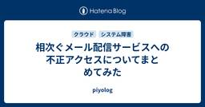
相次ぐメール配信サービスへの不正アクセスについてまとめてみた 34
piyolog
2026年10月13日から、メール配信などのサービスを提供する5つの事業者が、不正アクセスによる情報漏えいなどを相次いで公表しました。ここでは関連する情報をまとめます。5つの配信サービスで相次いだ不正アクセス各社の公表にある最初の動きは10月11日から10月27日。SpeeCAN RAIDENは災害情報などを扱い、メールのほかXやLINEなどの外部サービスとも連携する(出典: 10, 11)。サー
5日前
BrotliのC言語実装における境界外書き込みの脆弱性（CVE-2026-111497） 4JVNRSS Feed - Update Entry
Googleのデータ圧縮アルゴリズムBrotliのC言語実装における脆弱性（CVE-2026-111497）に対するアドバイザリが公開されました。本脆弱性は「HTTP2Shell」や「Node2Shell」とも呼ばれています。
3日前
AWS Emulatorの一般提供が開始 ―ローカルマシン内でAWS APIをエミュレート、コーディングエージェントによる安全なテスト実行が可能に 4 gihyo.jp
Amazon Web Services（AWS）は2026年11月11日、ローカルマシン上などでAWSアプリケーションを構築・テストできるエミュレーター「AWS Emulator」の一般提供を開始した。
3日前
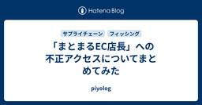
「まとまるEC店長」への不正アクセスについてまとめてみた 4 piyolog
2026年11月9日、ブランジスタソリューションは、同社が提供するネットショップ一元管理サービス「まとまるEC店長」で第三者による不正アクセスおよび情報漏洩の可能性が判明したと公表しました。ここでは関連する情報をまとめます。実際の注文情報を使った偽の返金案内メール発端は、一部の利用店舗から提供元に寄せられた問い合わせだった。購入者に実際の注文情報が記載された不審な返金案内メールが届いているというも
3日前

AI「テスト通りました」← これ､本当？ Stryker でテストの穴を塞いだ話 29 ClaudeCodeタグが付けられた新着記事 - Qiita
AI にテストを書いてもらって、「すべてのテストが通りました」と返ってくる。最近はこれが日常になりました。ただ、そのテストが 本当に何かを確かめているのか と聞かれると、正直、自信を持って答えられない。緑のチェックが並んでいるだけで、壊れても気づかないテストかもしれないからです。そこで試したのが、テストの強さを測る mutation testing（ミューテーションテスト） と、そのツールの St
6日前
マイクロソフト、.NET 11正式リリース。C#に共用型を導入、JITやAOTコンパイラの高速化、コマンドラインツール強化など新機能 18 Publickey
マイクロソフトは日本時間の11月13日未明からオンラインイベント「.NET Conf 2026」を開催し、同社の包括的なアプリケーションフレームワークの最新版となる「.NET 11」正式版のリリースを発表しました。 Announcing ....
4日前
情報漏えい続出でフィッシングに変化？ “その人専用詐欺メール”登場の懸念 18ITmedia NEWS セキュリティ 最新記事一覧
9月末から企業を標的とした不正アクセスが相次いでおり、ユーザーなどの個人情報がそこかしこで漏えいしている。詐欺メールの報告件数などに動きはあるのか。推移を監視する企業や組織に聞いてみた。
5日前
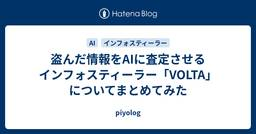
盗んだ情報をAIに査定させるインフォスティーラー「VOLTA」についてまとめてみた 28 piyolog
2026年10月31日、Cisco Talosは、盗んだ情報をLLMに査定させるフェーズを持つWindows向けインフォスティーラー「VOLTA」の解析結果を公表しました。ここでは関連する情報をまとめます。VOLTAとは何かVOLTAは、Windows(x86-64)向けのインフォスティーラー。窃取のあとに被害者をLLMに評価させるフェーズが備わっている。TalosはVOLTAを「成熟したスティー
6日前
ネット印刷「ラクスル」に不正アクセス 入稿データ一部漏えいか 名刺やはがき記載の個人情報も 25ITmedia NEWS セキュリティ 最新記事一覧
ラクスルは11月9日、印刷通販サービス「ラクスル」のデータ入稿に関わるシステムに不正アクセスがあり、印刷データなどに含まれる個人情報が流出した恐れがあると発表した。名刺やはがきなどの印刷物に載っている、注文者以外の人の情報も含む場合があるという。
6日前


Kaigi on Rails 2026 で学んだ「操作を見出す」設計で、実務の fat model をリファクタした話 #kaigionrails | Speee DEVELOPER BLOG 23 企業テックブログRSS
企業テックブログRSS
はじめに こんにちは、Speee で不動産一括査定サービス「イエウール」の開発をしている福井です。新卒で入社して半年、Rails を触りはじめて1年足らずの私が、Kaigi on Rails 2026 の発表で学んだ設計の考え方で、実務の fat model をリファクタした話を紹介します！ TL;DR モデルにある on: や if: の条件を業務ルールとして読み直すと、名前の付いていない操作を
6日前
声帯や肺をシミュレートして声を合成する「CHIMERA Vocal Synth」公開 ―Rust製、ブラウザから操作する音声シンセサイザー 14 gihyo.jp
ソフトウェアエンジニアのJameson Hodge氏は2026年11月7日、肺や声帯、声道などを物理モデルで再現して音を作る音声シンセサイザー「CHIMERA Vocal Synth」を公開した。
5日前
Google Search gets a major upgrade with Gemini 4 Hydrogen 3 AI
We are bringing Gemini 4 Hydrogen to Google Search globally to provide you with more helpful, visual, and intuitive responses.
2日前
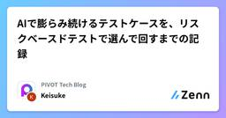
AIで膨らみ続けるテストケースを、リスクベースドテストで選んで回すまでの記録 3 Zennのトレンド
はじめにこんにちは。ビジネス映像メディア「PIVOT」で、QAエンジニア兼PjMをしている ケイスケ です。PIVOTのモバイルアプリ（iOS / Android）では、AIでテストケースを書くようになってから、ケースの数が増え続けています。リリース前のUAT（受け入れテスト）で全件を回すのが難しくなってきたので、リスクベースドテスト（RBT）で回すケースを選ぶことにしました。ルールは一度では決ま
2日前

QA チームで Jev 勉強会を開いたら、AI に任せる範囲と人に残したい範囲が見えてきた | LayerX エンジニアブログ 3 企業テックブログRSS
企業テックブログRSS
QA エンジニア16人で Jev の勉強会を開き、78枚の付箋から「Jev に任せる場所」と「人に残す場所」を整理しました。判断特化型 AI を QA に活かすための、2つの問いを紹介します。
3日前
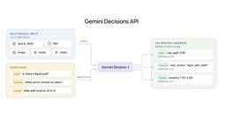
Google、新しい意思決定モデル「Gemini Decision 1」を搭載、最大1,000問を一度に高速判定する「Gemini Decisions API」を発表
3 gihyo.jp
Googleは2026年11月11日、精度が高く高速なマルチモーダル意思決定モデル「Gemini Decision 1」と、これをGoogle AI Studioを通じて利用できる新しいAPI「Gemini Decisions API」を発表した。
3日前

OpenAI APIで国内推論可能に GPT-6 Lunaのみ | ITmedia AI＋ 最新記事一覧 3AI情報RSS
OpenAIが提供するAPIで「GPT-6 Luna」に限り「国内推論」が可能になった。
3日前

【AWS】AWS EmulatorでCDK/Terraformのスタックはどこまで動くか【AWSEmulator】 3 Qiita - 人気の記事
はじめに2026年11月11日、AWSからAWS Emulatorが公式にリリースされました。AWS SDKやAWS CLIの呼び出しを、AWSアカウントなしで、ローカルやCI上のエミュレーターに向けられるツールです。公式は、実装されているAPIには有効な呼び出しにAW...
3日前
【AWS】AWS EmulatorでCDK/Terraformのスタックはどこまで動くか【AWSEmulator】 3 AWSタグが付けられた新着記事 - Qiita
はじめに2026年11月11日、AWSからAWS Emulatorが公式にリリースされました。AWS SDKやAWS CLIの呼び出しを、AWSアカウントなしで、ローカルやCI上のエミュレーターに向けられるツールです。公式は、実装されているAPIには有効な呼び出しにAWSと同じ結果を、無効な呼び出しには同じエラーを返し、実装されていないAPIは501で失敗させる、と説明しています。追加料金はかかり
3日前
人がアラートを追うSOCは2027年に終わる？ Google Cloudのセキュリティ予測 3ITmedia エンタープライズ「セキュリティ」 最新記事一覧
Google Cloudによると、生成AIを使った攻撃と防御は2026年、実運用の段階に入った。Google Cloudはこうした状況を踏まえ、2027年のセキュリティ予測を公開した。人を前提としてきた企業の防御体制は、何をどう変えることになるのか。
3日前

X Mileさんと合同AI勉強会をして分かった、AIに任せるところと人がやるところ | ROXX開発者ブログ 21 企業テックブログRSS
企業テックブログRSS
こんにちは、ROXXでEM（エンジニアリングマネージャー）を務めている窪内です。 10月14日、同じビルに入っているX Mileさんと、合同でAI勉強会を開きました！ 両社あわせて30名弱が集まり、LT6本とブレイクアウト5部屋を2時間に詰め込んだ、にぎやかな会になりました。 同じビルで、同じ人材紹介の領域にいる2社ですが、お互いの開発の中身をじっくり見せ合うのは今回が初めて。使っている道具はけっ
6日前

なぜ mixi2 は iPhone Duo の発売初日から最適化できたのか？ | MIXI DEVELOPERS Tech Blogのフィード 19 企業テックブログRSS
こんにちは！mixi2 エンジニアの久野です🍎iPhone Duo（以下 Duo）の発売初日、mixi2 がすでに最適化されている！ と話題にしていただきました。対応を早く進められた理由は、振り返るとこの 3 つです。ボトムタブが独自実装だったため、縦配置に変更しやすかったこと分割した画面の右側に表示したい推し機能が決まっていたことシミュレーターでの確認だけで、実機でも動くことを祈ってリリースする
6日前
なぜ mixi2 は iPhone Duo の発売初日から最適化できたのか？ 19 MIXI DEVELOPERS Tech Blogのフィード
こんにちは！mixi2 エンジニアの久野です🍎iPhone Duo（以下 Duo）の発売初日、mixi2 がすでに最適化されている！ と話題にしていただきました。対応を早く進められた理由は、振り返るとこの 3 つです。ボトムタブが独自実装だったため、縦配置に変更しやすかったこと分割した画面の右側に表示したい推し機能が決まっていたことシミュレーターでの確認だけで、実機でも動くことを祈ってリリースする
6日前
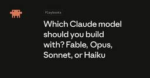
Which Claude model should you build with? 19 Claude Code Blog
How to choose between Claude Fable 5.2, Opus 5.5, Sonnet 5.5, and Haiku 5.5 by task, cost, and effort level.
6日前
漁師が副業でサイバー攻撃、AIで侵入コストは「1社25ドル」 激安化する脅威とどう戦うか？ 5＠IT Security&Trustフォーラム 最新記事一覧
海が荒れて漁に出られない日は、サイバー攻撃で稼ぐ。そんな犯罪者がいるという。AIによって攻撃のハードルは下がり、1社への侵入を試みるコストは25ドル程度との試算もある。脆弱性の発見も急増する中、企業は何を守り、何を捨てるべきなのか。安野貴博氏率いるチームみらいが開催した勉強会で、専門家らがAI時代の防御と法制度の課題を議論した。
3日前

Snowflake Dashboards 2.0が最高な理由と、これからBIに求められること | Snowflake Data Heroesのフィード 5 企業テックブログRSS
この記事についてSnowflakeから新しいDashboards（ドキュメント上は Dashboards 2.0 とも呼ばれています）が出ました。触ってみて、正直かなり感動しています。何年も前から「Snowflakeの中でパッと数字を見て、それに質問したいだけなのに、ちょうどいいものがない」と不満を持っていたのですが、ようやくその答えが来たと感じたからです。この記事では、なぜこれが私にとって最高だ
4日前

マイクロソフト、150以上のオープンソースUIコンポーネントがBlazorに寄贈されたことを発表。InfragisticsとSyncfusionから 15 Publickey
マイクロソフトは、C#などの.NETテクノロジーを用いてWebアプリケーションの開発を可能にするフレームワーク「Blazor」に150以上のオープンソースUIコンポーネントが寄贈されたことを発表しました（発表1、発表2） これはマイクロソフ...
5日前
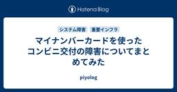
マイナンバーカードを使ったコンビニ交付の障害についてまとめてみた 4 piyolog
2026年11月10日、マイナンバーカードなどを使ったコンビニ交付で、戸籍系の証明書が多数の自治体で一時的に交付できなくなりました。ここでは関連する情報をまとめます。戸籍系の証明書でコンビニ交付停止J-LISは11月10日6時30分頃から一部の団体でコンビニ交付サービス(戸籍及び戸籍の附票)が利用できない事象が発生していたと告知。16時20分頃に復旧を確認(出典: 1)。J-LISの説明では、10
4日前

画像認識：Haar CascadesからVision Transformerまで | NTT docomo Business Engineers' Blog 4 企業テックブログRSS
企業テックブログRSS
こんにちは。docomo business SIGN® VPaaS開発チームのJJ、笠置、鈴木です。 普段は映像AIプラットフォームサービスであるdocomo business SIGN® VPaaSの開発をしています。 最近、クマの出没に関するニュースを目にする機会が増えています。人身被害も出ており、対策が急がれています。こうした中、NTTドコモでは、北海道の携帯電話の基地局に設置したカメラの映
4日前

「.NET MAUI 11」がついにXamarin由来のMonoランタイムから脱却、CoreCLRに統一 8 Publickey
マイクロソフトは.NET 11と合わせてリリースしたUIフレームワーク「.NET MAUI 11」で、ついに内部ランタイムがMonoから脱却し、CoreCLRに統一されたことを明らかにしました。 .NET MAUIはシングルコードでiOS、...
4日前

シングル AZ 構成の本番環境 EC2 を夜間土日に停止する運用のリスクについて考える 3 AWSタグが付けられた新着記事 - Qiita
自治体では昨今ガバメントクラウドのコスト削減が課題になっています。コスト削減のため、本番環境であっても「シングル AZ 構成にしたい」「夜間や土日は EC2 インスタンスを停止したい」といった相談を見かけることがあります。シングル AZ 構成や夜間土日の停止運用は、本番環境の可用性要件との整合を慎重に確認する必要があります。この記事では、AWS 環境でこれらを組み合わせた時に、現実的にどのようなリ
3日前

ITエンジニアが選ぶ「ITエンジニア本大賞2027」投票スタート 3 Publickey
翔泳社が毎年開催している「ITエンジニア本大賞」の今年の投票が開始されました。 「ITエンジニア本大賞2027」投票がスタート！ https://t.co/9elKdpCcVS 今年読んでよかったおすすめ本を投票してみてください&mdash...
3日前

伝説のブラスロックバンド「スペクトラム」の45年ぶりの新曲にAI技術で協力しています（CloseBox） 3
テクノエッジ TechnoEdge
2025年5月27日、テクノエッジ編集部宛に一通のメールが届きました。筆者が出演したテレビ番組を見て、コンタクトを取りたいというのです。送り主は新田一郎さん。
3日前
伝説のブラスロックバンド「スペクトラム」の45年ぶりの新曲にAI技術で協力しています（CloseBox） | テクノエッジ TechnoEdge 3 AI情報RSS
2025年5月27日、テクノエッジ編集部宛に一通のメールが届きました。筆者が出演したテレビ番組を見て、コンタクトを取りたいというのです。送り主は新田一郎さん。
3日前
端末を開いたら即アウト？ CVSS 11.0の「致命的脆弱性」が笑える理由
3＠IT Security&Trustフォーラム 最新記事一覧
端末を開くだけで攻撃が成立し、CVSSスコアは満点超えの11.0。そんな「致命的脆弱性」を告発する特設サイトが登場した。ただし、これは端末の正常な機能を脆弱性に見立てたパロディーだ。背景にあるのは、脆弱性の命名や公表を巡る風潮への皮肉だ。
4日前

『Unity パフォーマンスチューニング バイブル』の続編『Unity パフォーマンスチューニング ティップス 2026』を無料公開しました | CyberAgent Developers Blog | サイバーエージェント デベロッパーズブログ 3
企業テックブログRSS
弊社ゲーム・エンターテイメント事業部（SGE）のエンジニアが執筆した書籍『Unity ...
4日前
『Unity パフォーマンスチューニング バイブル』の続編『Unity パフォーマンスチューニング ティップス 2026』を無料公開しました | CyberAgent Developers Blog | サイバーエージェント デベロッパーズブログ 3 AI情報RSS
弊社ゲーム・エンターテイメント事業部（SGE）のエンジニアが執筆した書籍『Unity ...
4日前
『Unity パフォーマンスチューニング バイブル』の続編『Unity パフォーマンスチューニング ティップス 2026』を無料公開しました 3 CyberAgent Developers Blog | サイバーエージェント デベロッパーズブログ
弊社ゲーム・エンターテイメント事業部（SGE）のエンジニアが執筆した書籍『Unity ...
4日前

Vue Fes Japan 2026 参加レポート | ANDPAD Tech Blog 3 企業テックブログRSS
企業テックブログRSS
こんにちは！ANDPAD施工管理の開発チームでSWEをしている井野です。最近3Dプリンターを購入しまして、日々作れそうなものを家の中でめざとく探し回っています。 2026 年 10 月 24 日、大手町プレイス ホール & カンファレンスで開催された Vue Fes Japan 2026 に参加しました。 今年Vueを触り始めたばかりの私にとって、今回が初めての Vue Fes Japan 参加で
4日前
A2UI 1.0: Build delightful, fast, reliable, agentic experiences 3 Google Developers Blog
A2UI 1.0 is an open protocol for generative UI that enables AI agents to render interactive, native screens across web, mobile, and desktop applications. Developers can leverage open-source renderer S
4日前

脆弱性の情報は間に合っている？ 英語は 2 時間以内、悪用は 4 割が 1 日以内、日本語は中央値 4.6 日後。悪用された 74 件を調べて分かった 10 AIタグが付けられた新着記事 - Qiita
AI を使ったサイバー攻撃で、脆弱性が公表されてから悪用されるまでの時間は、週から日の単位に縮みました。日本政府も、2026 年 5 月の Project YATA-Shield で、AI の悪用で攻撃のスピードと規模が劇的に増加していると書いています。では、悪用される脆弱性の情報は、日本語でいつ読めるようになるのでしょうか。編集部は、米国の CISA（サイバーセキュリティ・インフラストラクチャ安
6日前
脆弱性の情報は間に合っている？ 英語は 2 時間以内、悪用は 4 割が 1 日以内、日本語は中央値 4.6 日後。悪用された 74 件を調べて分かった 10 生成AIタグが付けられた新着記事 - Qiita
AI を使ったサイバー攻撃で、脆弱性が公表されてから悪用されるまでの時間は、週から日の単位に縮みました。日本政府も、2026 年 5 月の Project YATA-Shield で、AI の悪用で攻撃のスピードと規模が劇的に増加していると書いています。では、悪用される脆弱性の情報は、日本語でいつ読めるようになるのでしょうか。編集部は、米国の CISA（サイバーセキュリティ・インフラストラクチャ安
6日前
脆弱性の情報は間に合っている？ 英語は 2 時間以内、悪用は 4 割が 1 日以内、日本語は中央値 4.6 日後。悪用された 74 件を調べて分かった 10 Securityタグが付けられた新着記事 - Qiita
AI を使ったサイバー攻撃で、脆弱性が公表されてから悪用されるまでの時間は、週から日の単位に縮みました。日本政府も、2026 年 5 月の Project YATA-Shield で、AI の悪用で攻撃のスピードと規模が劇的に増加していると書いています。では、悪用される脆弱性の情報は、日本語でいつ読めるようになるのでしょうか。編集部は、米国の CISA（サイバーセキュリティ・インフラストラクチャ安
6日前
「90日間ログ保持」はもう古い VPNの脆弱性やActive Directoryを悪用するランサムウェアの実態と対策 5＠IT Security&Trustフォーラム 最新記事一覧
Mandiantは年次レポート「M-Trends 2026」を発表した。2025年に実施した50万時間以上のインシデント調査では、サイバー犯罪の分業化と連携の進展により、初期アクセスから攻撃実行グループへの引き継ぎ時間が2022年の8時間超から2025年には22秒に短縮されたことが明らかになった。
4日前
NTTデータ、住友生命から受託したシステムに不正アクセス 「Vitality」利用者約8万人の情報漏えい 5ITmedia NEWS セキュリティ 最新記事一覧
NTTデータは11月9日、住友生命保険から構築・運用を受託しているシステムが不正アクセスを受け、利用者約8万人の個人情報が漏えいしたと発表した。対象は「住友生命Vitality体験版・企業型」と「Vitalityスマート」の利用者で、新規申し込みなどを停止している。
5日前

More ways to work with Claude: Sheets, Whiteboards, and Interactive Connectors 5 Claude Product announcements
Work at the speed of thought
5日前
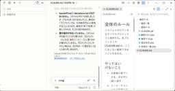
Claude CodeでAIの記憶を永続的にして、成果物のクオリティをアップさせよう 4 gihyo.jp
今回は、人の注意力だけに頼らず、仕組みで「記憶」と「守り」を持たせます。全体のルール・引き継ぎ・判断の記録の3つのファイルと、帳票の情報をAIに渡す前に伏せる黒塗りツールを作り、後半で、筆者がなぜこの構成にしたのかを説明します。
5日前
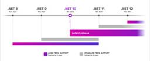
.NET 8と.NET 9のサポートは昨日で終了。脆弱性が社会問題化している現在、.NET 10への移行を推奨 3 Publickey
マイクロソフトの包括的なソフトウェアフレームワーク「.NET 8」と「.NET 9」のサポートが昨日（2026年11月10日）終了しました。 .NET 8は今から3年前の2023年11月にリリースされ.NET 9はその1年後の2024年11...
4日前

Introducing AlphaProof Code: a breakthrough in verifying complex software at depth 3 Google DeepMind News
AlphaProof Code agents wrote three million lines of proofs in Lean to verify Signal’s core encryption.
4日前

中高生Rubyプログラミングコンテストに協賛します | ESM アジャイル事業部 開発者ブログ 3 企業テックブログRSS
企業テックブログRSS
@junk0612 です。これからの社会を担う世代を対象にした Ruby のプログラミングコンテスト、『中高生Rubyプログラミングコンテスト2026』に、今年も協賛します。 2026.ruby-procon.net 毎年さまざまなアイディア・工夫を凝らした作品が提出され、創ったみなさんによる熱のこもったプレゼンが行われるので、どちらもすでに楽しみです。 最終審査会に今年もお邪魔する予定です。どう
5日前

エンジニアが採用活動の当事者になる | HERP TechHub 3 企業テックブログRSS
企業テックブログRSS
この記事は何？こんにちは、株式会社HERPでエンジニアマネージャーをしているどやです。引き続きプロダクト領域の統括エンジニアやエンジニアの採用責任者をやっています。以前、採用活動というのは組織設
5日前

Kaigi on Rails 2026 参加レポート | stmn tech blog 3
 企業テックブログRSS
企業テックブログRSS
はじめに 初めまして！株式会社スタメンでバックエンドエンジニアをしております、Kと申します。 今回、Kaigi on Rails 2026に参加させていただきましたので、レポートいたします。 個人的には初めてのカンファレンス参加となり、不安がありながらも会場に向かいました。 今年の会場はベルサール渋谷ガーデンでした。 集合写真 会場の様子 ブースエリアは大盛況で、通るのも大変なほど。 15時のCo
5日前
「縁の下の力持ち」なIT部門はいつまでもつ？ “おまかせ運用”は中小企業の現実解か 3ITmedia エンタープライズ「セキュリティ」 最新記事一覧
PHPの重大な脆弱性「PHP2shell」では、多くの企業がサービスを止めてまで緊急対応に追われました。その裏で、サポートが終了した古いPHPにまで独自の修正を施した事業者がいます。この対応が示す、中小企業にとって現実的な脆弱性対応の在り方とは。
5日前

eMudhra中間CA問題対処した？ あなたのマシンでの確認方法と暫定対策手順 | ANDPAD Tech Blog 4 企業テックブログRSS
こんにちは、テックリードの tomtwinkleです。 我が家に娘が無事誕生して早2ヶ月。あやしながら趣味でセキュリティ事案をウォッチしておりますが、CVEの加速度的な増加具合に戦々恐々としています。 先日 eMudhra 対応で Go 1.27.3 を出したばっかりですが、早速なんだか大量のCVEにモリモリ対応して Go 1.27.4 の準備をしているっぽいGoチームには頭が下がります。 git
6日前

AIと一緒に資格勉強をして、1か月でGitHub資格5つに合格した方法 | APC 技術ブログ 3 企業テックブログRSS
企業テックブログRSS
こんにちは。ACS事業部の井田です。 私は資格勉強に苦手意識がありましたが、AIを活用して学習ノートや練習問題を作り、この10月にGitHubの資格を5つ取得できました。 AIを活用した勉強方法はすでに多くの記事で紹介されていますが、今回、自分で取り組む中で気づきや工夫した点がありましたので、それらも含めて紹介します。 資格勉強に苦手意識のある方や、AIを活用した勉強方法に興味がある方の参考になれ
5日前

「RailsはJITコンパイラだ！」（翻訳） | TechRacho 3
企業テックブログRSS
概要 CC BY-NC-SA 4.0 International Deedに基づいて翻訳・公開いたします。 英語記事: Rails is a JIT compiler | Rails at Scale 原文公開日: 2026年10月21日 原著者: Max Bernstein CC BY-NC-SA 4.0 Deed | 表示 - 非営利 - 継承 4.0 国際 | Creative Common
5日前

PS5不要でPS5ゲームが遊べる『PlayStation Portalプレーヤー日本語専用』発表 「リモート」抜いてストレージ追加、新機能を予告 3 テクノエッジ TechnoEdge
ソニーのゲーム部門ソニー・インタラクティブエンタテインメント(SIE)が、PS5タイトルが遊べる携帯ゲーム機『PlayStation Portal プレーヤー日本語専用』を12月10日に発売します。
6日前
PS5不要でPS5ゲームが遊べる『PlayStation Portalプレーヤー日本語専用』発表 「リモート」抜いてストレージ追加、新機能を予告 | テクノエッジ TechnoEdge 3 AI情報RSS
ソニーのゲーム部門ソニー・インタラクティブエンタテインメント(SIE)が、PS5タイトルが遊べる携帯ゲーム機『PlayStation Portal プレーヤー日本語専用』を12月10日に発売します。
6日前

Lambda MicroVMs で開発用の一時 Backend 環境を作ってみた | DRESS CODE TECH BLOGのフィード 3 企業テックブログRSS
はじめにDress Code 株式会社のかわうそです。Claude や Codex などの AI で開発を進める中で、ローカル PC 環境ではなく、自由にデプロイして動作確認できる環境がほしいと感じていました。MicroVM のような環境があれば、Sandbox のように一時的にテストしたい環境も構築できるため、さまざまな可能性があると考えています。そこで、Lambda MicroVMs を使い、
6日前

フルディスク暗号化におけるTPM 2.0の役割 | ラック・セキュリティごった煮ブログ 3 企業テックブログRSS
企業テックブログRSS
デジタルペンテスト部のν（ニュー）です。 Windows 11の導入要件にもなっている「TPM 2.0」ですが、TPM 2.0が何なのか深く追おうとする人はそう多くはないと思います。今回はそんなTPM 2.0について、特にフルディスク暗号化においてどんな使われ方をしているかを紹介します。 本記事は、定期的に開催されている部内勉強会において発表した内容をベースに、加筆修正を行ったものとなります。 ま
6日前
AIエージェントの入口はMCPかCLIかAPIか？ 迷う前に押さえたいプロダクトの4層 3DeveloperZine:新着一覧
AIエージェントを「どう使うか」は多く語られていますが、プロダクトを提供する側は、エージェントにどんな体験を届けるべきなのでしょうか。人が画面を操作する前提で作られてきたプロダクトは、いま、エージェントがAPIを呼び出して使う時代を迎えています。本連載では、この体験をAX（Agent Experience）と呼び、全2回で設計の考え方を整理します。第1回は、価値の重心が画面からAPI・データへ移る
6日前